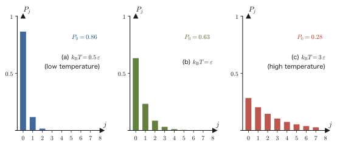
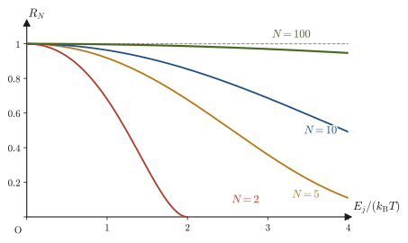
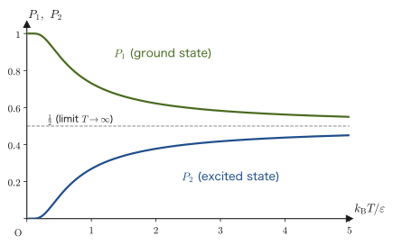
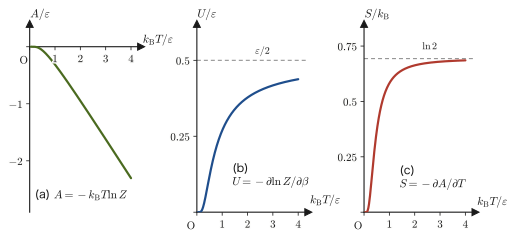
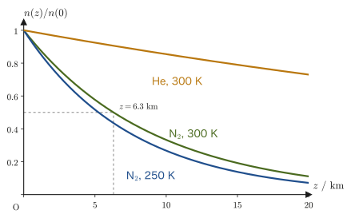
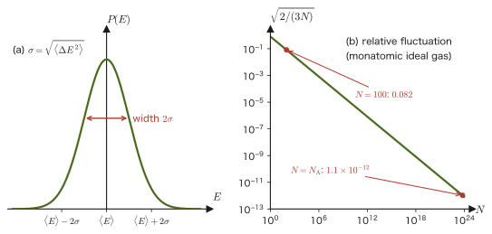
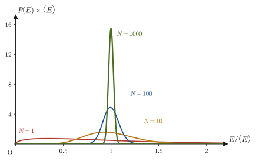
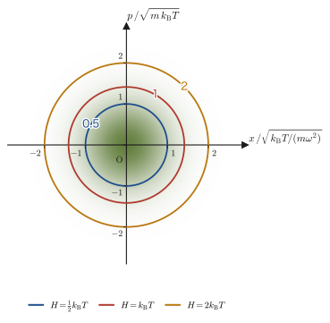
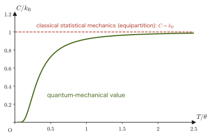

Chapter 50The Canonical Distribution and the Partition Function
In Chapter 48 we considered an isolated system that exchanges no energy at all with its surroundings, and constructed the microcanonical distribution from the principle of equal a priori probability: “every allowed microstate is realized with equal probability.” Most of the systems we handle in the laboratory, however, are not isolated. A glass of water settles to room temperature while exchanging heat with the air of the room, and a reaction in a flask is kept at a constant temperature by immersing it in a constant-temperature bath (thermostat). The probability distribution of a system in contact with an environment kept at constant temperature (a heat bath) is the canonical distribution, the star of this chapter, and from it arises the partition function $Z$.
The conclusion of the canonical distribution is astonishingly short. The probability that a state of energy $E_j$ is realized is proportional to $e^{-E_j/(k_{\mathrm B}T)}$—that is all. Yet the power of statistical mechanics starts here. As long as we can compute the sum $Z$ of the Boltzmann factors, every quantity of thermodynamics—mean energy, free energy, entropy, pressure, specific heat, and so on—can be extracted mechanically just by differentiating $Z$. In this chapter we learn, in turn: (1) that the Boltzmann factor emerges naturally from the interaction with a heat bath; (2) the recipe for extracting thermodynamic quantities from the partition function; (3) that when we rederive the altitude distribution of gas molecules (the altitude distribution of air pressure) and Maxwell's velocity distribution with this new tool, they agree with the results obtained by completely different routes, namely the balance of forces and the kinetic theory of gases; (4) that the energy fluctuation is determined by the heat capacity and, as the number of particles $N$ grows, becomes smaller as $1/\sqrt N$, so that an isolated system (Chapter 48) and a system in contact with a heat bath (this chapter) in the end give the same thermodynamics; (5) the general proof of the equipartition theorem, “$\frac12k_{\mathrm B}T$ per degree of freedom,” which lies behind the formula “the mean kinetic energy of a gas molecule is $\frac32k_{\mathrm B}T$” that one memorizes in high school; and (6) that the Boltzmann factor also emerges from another tool, the method of Lagrange multipliers.
In high school physics we memorized the mean kinetic energy of a gas molecule, $\frac32k_{\mathrm B}T$, and the fact that molecules move more vigorously the higher the temperature, as “formulas.” Here we check, using nothing but differentiation and the exponential function, that all of these follow from the single principle that “the probability is proportional to $e^{-E/(k_{\mathrm B}T)}$.”
- The definition and meaning of the canonical distribution of a system in contact with a heat bath, and of the partition function $Z=\sum_jg_je^{-\beta E_j}$ ($\beta=1/(k_{\mathrm B}T)$, with degeneracy $g_j$)
- The argument that derives the Boltzmann factor by applying the principle of equal a priori probability to the isolated system consisting of the system and the heat bath together, and Taylor-expanding (University Mathematics, Chapter 4) the logarithm $\ln W_{\text{bath}}$ of the number of states of the heat bath
- $\langle E\rangle=-\partial\ln Z/\partial\beta$, the Helmholtz free energy $A=-k_{\mathrm B}T\ln Z$, the recipe for finding $S$, $p$, and $U$ from it, and the fact that the partition function of independent systems is a product
- The altitude distribution of gas molecules (the altitude distribution of air pressure) and a rederivation of Maxwell's velocity distribution law
- The energy fluctuation $\langle\Delta E^2\rangle=k_{\mathrm B}T^2C_V$ and the relative fluctuation $\propto1/\sqrt N$; the equivalence of the microcanonical and canonical distributions
- A general proof, by Gaussian integrals, of the equipartition theorem ($\frac12k_{\mathrm B}T$ per degree of freedom whose energy is a quadratic form), its application to the Dulong–Petit law, and its limits of validity
- Another route to the Boltzmann factor and the partition function: maximizing the thermodynamic weight $W$ with the method of Lagrange multipliers (University Mathematics, Chapter 6)
Source notes: Yasuhide Mochizuki, Physics Notes: Statistical Mechanics, p. 9.
50.1 The Canonical Ensemble and the Boltzmann Factor
First let us make clear the setting for what we are about to consider. Suppose that the system of interest (for example, a single molecule in a flask immersed in a constant-temperature bath, or a single atom at a lattice site of a crystal) is in contact with a very large heat bath (the surrounding water or air, the whole crystal, and so on) kept at temperature $T\ [\mathrm K]$, and that it can exchange energy freely with the bath. Then the system of interest does not have a definite energy, and may take a different value each time we measure it—just as, even when the temperature of a room is kept constant, the kinetic energy of each individual air molecule in the room fluctuates incessantly.
Thus the question arises: “Of the discrete values $E_1,E_2,\ldots$ of the energy of the system (as we saw in Chapter 48, according to quantum mechanics the energies allowed to a system generally form a set of discrete values), which one is it likely to have?” The canonical distribution answers this question. In what follows, while accepting the existence of energy levels as a fact from quantum mechanics, we treat the way of counting microstates and the motion of particles in the language of classical mechanics (phase space). Statistical mechanics from this standpoint is called classical statistical mechanics.
Intuition: What is an energy level?
A particle confined in a closed space behaves as a wave, so—like a guitar string—only standing waves of particular wavelengths are allowed, and the energy takes discrete values. These are the energy levels. For example, quantum mechanics tells us that the levels of a particle of mass $m$ confined in a box of side $L$ are $\frac{h^2}{8mL^2}(n_x^2+n_y^2+n_z^2)$, and that the levels of a harmonic oscillator are $\hbar\omega(n+\frac12)$ (University Mathematics, Section 45.3, University Mathematics, Section 46.2). Here $h=6.626\,070\,15\times10^{-34}\ \mathrm{J\,s}$ is the Planck constant, $\hbar=h/(2\pi)$ (read “h-bar”), $\omega$ is the angular frequency of the oscillation (in units of $\mathrm{rad/s}$), and $n_x,n_y,n_z=1,2,3,\ldots$ and $n=0,1,2,\ldots$ are integers that label the levels. Since this book does not treat quantum mechanics itself, we give these forms of the levels as “known facts.” When the box is large or the particle is heavy, the spacing between levels becomes extremely fine, and the levels may be regarded as continuous (Section 50.4).
50.1.1 The canonical ensemble and the partition function
In statistical mechanics we consider an imaginary collection of countless systems of the same kind placed under the same conditions, and investigate which microstates appear in this collection and in what proportions. We call this collection an ensemble. The collection of systems placed under the condition “in contact with a heat bath at temperature $T$” is called the canonical ensemble. In contrast, the “collection of isolated systems (which exchange no energy at all with the outside)” that we studied in Chapter 48 is the microcanonical ensemble (Table 50.1). The correspondence of the names (micro- = small, canonical = standard) is merely a historical naming convention, and there is no need to probe it deeply. Note that $\langle E\rangle$ appearing in Table 50.1 (the mean value, or expectation value, of the energy; the symbol $\langle\ \rangle$ denotes “the average over the ensemble”) will be defined precisely, using probabilities, in Section 50.3.1.
| Microcanonical | Canonical | |
|---|---|---|
| Condition of the system | Isolated ($E,V,N$ fixed) | In contact with a heat bath at temperature $T$ ($T,V,N$ fixed) |
| Energy of the system | Fixed ($E\le E_j\le E+\Delta E$) | Fluctuates (the mean $\langle E\rangle$ is determined by $T$) |
| Probability of a microstate | All equal ($1/W$) | For a state of energy $E_j$, proportional to $e^{-E_j/(k_{\mathrm B}T)}$ |
Let the values of energy the system can take be $E_j$ ($j=1,2,\ldots,n$; $n\to\infty$ when there are infinitely many levels). When there are several microstates with the same energy $E_j$, we write their number as $g_j$ and call it the degeneracy. For example, if $g_j=1$, there is only a single microstate corresponding to the energy $E_j$ (no degeneracy). Writing $P_j$ for the probability that the energy of the system of interest (the subsystem of interest within the whole consisting of system plus heat bath) is $E_j$, in the canonical ensemble it takes the following form.
Law 50.1: The canonical distribution and the Boltzmann factor
The probability $P_j$ that a system in thermal equilibrium in contact with a heat bath at temperature $T$ has energy $E_j$ (degeneracy $g_j$) is given by
\begin{equation} P_j=\frac{g_j\,e^{-E_j/(k_{\mathrm B}T)}}{\displaystyle\sum_{j'} g_{j'}\,e^{-E_{j'}/(k_{\mathrm B}T)}} \label{eq:50-Pj} \end{equation}where $k_{\mathrm B}=1.380\,649\times10^{-23}\ \mathrm{J/K}$ is the Boltzmann constant (the same constant that appears in $S=k_{\mathrm B}\ln W$ of Chapter 49). The exponential function $e^{-E_j/(k_{\mathrm B}T)}$ is called the Boltzmann factor.
Why this law holds will be derived from scratch in the next section, Section 50.2, using the tools of Chapters 48 and 49. In this section, let us first check what the form of the result says.
Definition 50.1: The partition function
The sum in the denominator of Eq. \eqref{eq:50-Pj},
\begin{equation} Z\equiv\sum_{j} g_j\,e^{-E_j/(k_{\mathrm B}T)} \label{eq:50-Z} \end{equation}is called the partition function. It is denoted by $Z$, the initial of the German word Zustandssumme (“sum over states”).
Illustration 50.1: Where does degeneracy come from?
A degeneracy $g_j\gt1$ arises naturally when the system has “equivalent directions.” (i) A particle in a box: the levels of a particle of mass $m$ in a cubic box of side $L$ are $E=\varepsilon_0(n_x^2+n_y^2+n_z^2)$, $\varepsilon_0\equiv h^2/(8mL^2)$. For $(n_x,n_y,n_z)=(1,1,1)$ we have $E=3\varepsilon_0$, and since no other triple gives the same sum, $g=1$. The three triples $(2,1,1),\ (1,2,1),\ (1,1,2)$ all give $4+1+1=6$ and so have the same energy $E=6\varepsilon_0$; hence $g=3$. Next come $9\varepsilon_0$ for $(2,2,1)$ and its permutations $(2,1,2),(1,2,2)$ ($g=3$), $11\varepsilon_0$ for $(3,1,1)$ and its permutations ($g=3$), and $12\varepsilon_0$ for $(2,2,2)$ alone ($g=1$). Because the three directions $x,y,z$ are equivalent (isotropic), there are several states that have the same energy when the directions are interchanged. If we make the box a rectangular parallelepiped (three sides of different lengths) and destroy the equivalence of the directions, this degeneracy is lifted. (ii) The hydrogen atom: the level with principal quantum number $n$ contains $2n^2$ states including spin ($g=2$ for $n=1$, $g=8$ for $n=2$). (iii) An electron of spin $\frac12$: in the absence of a magnetic field ($B=0$), the energies of the two spin orientations (up and down) are equal, so $g=2$ (when a magnetic field is applied, the level splits into two levels, each with $g=1$; this is the paramagnetism of Chapter 51).
Using the partition function, Eq. \eqref{eq:50-Pj} can be written compactly as $P_j=g_je^{-E_j/(k_{\mathrm B}T)}/Z$. $Z$ is the normalization constant that makes the sum of all the probabilities equal to 1. Indeed,
$$ \sum_jP_j=\frac1Z\sum_jg_je^{-E_j/(k_{\mathrm B}T)}=\frac ZZ=1 $$so the condition for probabilities (University Mathematics, Section 13.4) is satisfied automatically.
Caution: The summation index in the denominator is distinct from the $j$ in the numerator
The $j$ in the numerator of Eq. \eqref{eq:50-Pj} refers to “the particular level whose probability we want to know right now.” The sum in the denominator is “the sum over all levels,” and the index that runs through the sum is a dummy index unrelated to the particular level $j$. To avoid confusion, in Eq. \eqref{eq:50-Pj} of this book we have written the index of the denominator as $j'$. When a sum is written by itself, separately from $P_j$, as in the defining equation \eqref{eq:50-Z} of $Z$, any letter means the same thing ($\sum_jg_je^{-\beta E_j}=\sum_kg_ke^{-\beta E_k}$), so it is fine to write $j$.
Intuition: What does the Boltzmann factor say?
The Boltzmann factor $e^{-E_j/(k_{\mathrm B}T)}$ takes a smaller value the larger $E_j$ is (because the exponent becomes a large negative number). That is, Eq. \eqref{eq:50-Pj} makes the claim, which is intuitively plausible, that “states of higher energy are harder to realize.” Moreover, the smaller $T$ is, the larger $E_j/(k_{\mathrm B}T)$ becomes (for the same $E_j$), so the lower the temperature, the stronger the bias, and the probability concentrates on the states of low energy. Conversely, when $T$ is large, $E_j/(k_{\mathrm B}T)$ becomes small and all the levels approach nearly the same probability. The everyday intuition that “a system shaken hot readily scatters over various states regardless of whether their energy is high or low, whereas a cooled system concentrates on the most settled (lowest-energy) state” is expressed quantitatively in Eq. \eqref{eq:50-Pj}.
50.1.2 Change of the Boltzmann distribution with temperature
Figure 50.1 shows bar graphs of the probability $P_j$ at three temperatures for a system whose levels are equally spaced. For this example only, for ease of viewing, we number the levels starting from $j=0$, and let $E_j=j\varepsilon$ ($j=0,1,2,\ldots$, no degeneracy, infinitely many levels) (the ground state is $j=0$; note that this differs from the general discussion, which starts at $j=1$). At low temperature ($k_{\mathrm B}T=0.5\,\varepsilon$) the system is almost entirely in the ground state ($j=0$), but as the temperature rises the distribution extends a tail to the right (toward higher energy). At every temperature, $P_j$ is a geometric sequence in $j$ ($P_{j+1}/P_j=e^{-\varepsilon/(k_{\mathrm B}T)}$ is constant), which is why the graph looks “exponentially decreasing.” Using the formula for the sum of an infinite geometric series with common ratio $r=e^{-\varepsilon/(k_{\mathrm B}T)}\lt1$, $\sum_{j=0}^\infty r^j=1/(1-r)$, we obtain $Z=1/(1-r)$, that is, $P_j=(1-r)\,r^j$. For example, at $k_{\mathrm B}T=3\,\varepsilon$, $P_0=1-e^{-1/3}=0.283$.

The low- and high-temperature limits can be read off from the equations themselves (from here on we return to the general numbering $j=1,2,\ldots,n$). As $T\to0$, only the lowest level (the ground state, with energy $E_1$) survives, $Z\to g_1e^{-E_1/(k_{\mathrm B}T)}$, so that $P_1\to1$ and the other $P_j\to0$. As $T\to\infty$, all the exponential functions approach $e^0=1$, and when the number of levels is finite ($n$), $P_j\to g_j/\sum_{j'}g_{j'}$ (only the ratio of the degeneracies remains; that is, all microstates become equally probable). When there are infinitely many levels (the equally spaced levels above, or the harmonic oscillator), $\sum_{j'}g_{j'}$ diverges, so the limit does not take this form, and the higher $T$ is, the farther the probability spreads to ever higher levels.
Example 50.1: The Boltzmann factor for a two-level system without degeneracy
Suppose a system can take only two energy levels, $E_1=0$ and $E_2=\varepsilon$ ($\varepsilon\gt0$), without degeneracy ($g_1=g_2=1$). The system is in contact with a heat bath at temperature $T$. (a) Find the partition function $Z$. (b) Find the probabilities $P_1,P_2$. (c) Answer what happens to $P_1,P_2$ as $T\to0$ and as $T\to\infty$. (d) Tabulate $P_2$ for $k_{\mathrm B}T/\varepsilon=0.1,\ 0.5,\ 1,\ 3,\ 10$.
Solution. (a) Substituting $g_1=g_2=1$, $E_1=0$, $E_2=\varepsilon$ into Eq. \eqref{eq:50-Z} gives
$$ Z=g_1e^{-E_1/(k_{\mathrm B}T)}+g_2e^{-E_2/(k_{\mathrm B}T)}=e^{0}+e^{-\varepsilon/(k_{\mathrm B}T)}=1+e^{-\varepsilon/(k_{\mathrm B}T)} $$(b) From Eq. \eqref{eq:50-Pj},
$$ P_1=\frac{1}{Z}=\frac{1}{1+e^{-\varepsilon/(k_{\mathrm B}T)}},\qquad P_2=\frac{e^{-\varepsilon/(k_{\mathrm B}T)}}{Z}=\frac{e^{-\varepsilon/(k_{\mathrm B}T)}}{1+e^{-\varepsilon/(k_{\mathrm B}T)}} $$(Note that $P_1+P_2=1$.)
(c) As $T\to0^+$ ($k_{\mathrm B}T\to0$), $\varepsilon/(k_{\mathrm B}T)\to+\infty$, so $e^{-\varepsilon/(k_{\mathrm B}T)}\to0$. Therefore $P_1\to1$ and $P_2\to0$—at low temperature the system is almost certainly in the low-energy ground state ($E_1=0$). On the other hand, as $T\to\infty$, $\varepsilon/(k_{\mathrm B}T)\to0$, so $e^{-\varepsilon/(k_{\mathrm B}T)}\to1$, and hence $P_1\to\frac12$ and $P_2\to\frac12$—at high temperature the two levels become nearly equally probable.
(d) Letting $x\equiv\varepsilon/(k_{\mathrm B}T)$, we have $P_2=e^{-x}/(1+e^{-x})=1/(e^{x}+1)$. The values at each temperature are as follows (Table 50.2).
| $k_{\mathrm B}T/\varepsilon$ | $x=\varepsilon/(k_{\mathrm B}T)$ | $P_2=1/(e^x+1)$ |
|---|---|---|
| $0.1$ | $10$ | $4.5\times10^{-5}$ |
| $0.5$ | $2$ | $0.119$ |
| $1$ | $1$ | $0.269$ |
| $3$ | $1/3$ | $0.417$ |
| $10$ | $0.1$ | $0.475$ |
We can read off how $P_2$ increases monotonically from $0$ to $1/2$ as $T$ rises (a continuous graph is shown in Figure 50.4). We will use this two-level system repeatedly as a concrete worked example throughout this chapter.
Example 50.2: Degenerate levels—the most probable level is not necessarily the ground state
A system with three energy levels $E_1=0\ (g_1=1)$, $E_2=\varepsilon\ (g_2=3)$, $E_3=2\varepsilon\ (g_3=5)$ is in contact with a heat bath with $k_{\mathrm B}T=\varepsilon$. Find (a) the partition function $Z$, (b) the probabilities $P_1,P_2,P_3$ of finding the system in each level, and (c) the ratio of the probability that a single microstate within level $E_2$ is realized to the probability that the ground state is realized.
Solution. (a) Since $\beta\varepsilon=\varepsilon/(k_{\mathrm B}T)=1$, Eq. \eqref{eq:50-Z} gives
$$ Z=1\cdot e^{0}+3e^{-1}+5e^{-2}=1+3\times0.36788+5\times0.13534=1+1.10364+0.67668=2.7803 $$(b) The probability of each level is $P_j=g_je^{-E_j/(k_{\mathrm B}T)}/Z$, so
$$ P_1=\frac{1}{2.7803}=0.360,\qquad P_2=\frac{1.10364}{2.7803}=0.397,\qquad P_3=\frac{0.67668}{2.7803}=0.243 $$(The sum is $0.360+0.397+0.243=1.000$.) The level with the greatest probability is not $E_1$, which has the lowest energy, but $E_2$. This is because the degeneracy $g_2=3$ is large, so the “number of microstates belonging to that level” is large and the weight $g_j$ multiplies the probability of each level.
(c) The probability that one particular microstate among the three microstates of level $E_2$ is realized is $e^{-1}/Z=0.36788/2.7803=0.132$, and the probability that the ground state (of which there is only one) is realized is $1/Z=0.360$; their ratio is $e^{-1}=0.368$. That is, the probability of each individual microstate is larger the lower its energy—exactly what the Boltzmann factor fundamentally asserts. Distinguishing the probability $P_j$ of a level from the probability $P_j/g_j$ of a single microstate is an important point to watch when dealing with systems with degeneracy. Note also that if $g_2$ is doubled with all other conditions unchanged, the ratio $P_2/P_1=(g_2/g_1)e^{-\varepsilon/(k_{\mathrm B}T)}$ doubles.
Application: $k_{\mathrm B}T$ at room temperature and the size of the Boltzmann factor
At room temperature ($T=300\ \mathrm K$), $k_{\mathrm B}T=1.380649\times10^{-23}\times300=4.14\times10^{-21}\ \mathrm J=0.0259\ \mathrm{eV}$ (with $1\ \mathrm{eV}=1.602\,176\,634\times10^{-19}\ \mathrm J$). A rough measure of the probability that an excitation with energy difference $\varepsilon$ occurs thermally is $e^{-\varepsilon/(k_{\mathrm B}T)}$. For example, for $\varepsilon=0.1\ \mathrm{eV}$ we get $e^{-3.87}\approx0.021$ (about 2%), whereas for $\varepsilon=1.1\ \mathrm{eV}$, comparable to the band gap of semiconducting silicon, $e^{-42.5}\approx3\times10^{-19}$, so such an excitation almost never occurs. “Excitations sufficiently smaller than $k_{\mathrm B}T$ occur frequently, and those sufficiently larger almost never occur”—this is the basic rule of thumb for estimating defect formation, diffusion, thermal excitation of electrons, and the like in materials.
Let us lay out what lies ahead. In the next section (Section 50.2), we derive why Eq. \eqref{eq:50-Pj} is correct by applying the principle of equal a priori probability (Chapter 48) to an isolated composite system consisting of the system and a heat bath. In Section 50.3, we build a general method for calculating the mean energy, free energy, entropy, and pressure from the partition function $Z$. In Section 50.4 we apply it to the altitude distribution of gas molecules and to Maxwell's velocity distribution, in Section 50.5 we study the energy fluctuation, and in Section 50.6 we confirm the relation to the microcanonical distribution. In Section 50.7 we prove a general theorem, the equipartition theorem, and finally in Section 50.8 we see that the same Boltzmann factor can also be reached from an entirely different tool, the method of Lagrange multipliers.
50.2 A System and a Heat Bath — Derivation of the Boltzmann Factor
Now let us derive Law 50.1 (the form of the Boltzmann factor). In mechanics we separated the object of interest (the system) from the world around it (the surroundings). In statistical mechanics, too, we divide things into the system of interest and a very large heat bath around it (a constant-temperature bath at temperature $T$). The key is the viewpoint that “even if the system of interest is not itself isolated, the whole consisting of system plus heat bath can be regarded as an isolated system.” For an isolated system, the principle of equal a priori probability learned in Chapter 48—every allowed microstate is realized with equal probability—can be used as it stands.
50.2.1 The composite system of system plus heat bath
We bring the system of interest (system S) into contact with a very large heat bath so that energy can be freely exchanged between them. The whole consisting of system S and the heat bath is assumed to be completely isolated from the outside and to have total energy $E_{\text{tot}}$ (constant). We regard the interaction energy between system S and the heat bath as negligibly small compared with their respective energies (weak contact), so that the total energy can be written $E_{\text{tot}}=(\text{energy of system S})+(\text{energy of the heat bath})$ (Figure 50.2). When the energy of system S is one of the discrete values $E_j$ (degeneracy $g_j$), the energy of the heat bath is the remainder, $E_{\text{tot}}-E_j$.
Let us fix the notation for the number of microstates of the heat bath. In Law 49.1 (Boltzmann's principle) of Chapter 49, we let $W$ be the number of microstates with energy in the range from $E$ to $E+\Delta E$ (the energy shell) and wrote $S=k_{\mathrm B}\ln W$. For the heat bath we use the same meaning: we write $W_{\text{bath}}(E)$ for the number of microstates of the heat bath whose energy lies in the shell from $E$ to $E+\Delta E$ (the width $\Delta E$ is taken to be constant, independent of $E$). In the notation of Chapter 49 (Definition 49.1), the number of states in this shell was written $W(E)\,\Delta E$ using the “density of states” $W(E)=\dd\Omega/\dd E$. Below we hold $\Delta E$ fixed and write the number of states in the shell simply as $W(E)$ ($W_{\text{bath}}(E)$). Since $\Delta E$ is a constant that cancels out in ratios and in the $E$-derivative of a logarithm, it does not affect the result. Then, for the entropy of the heat bath,
$$ S_{\text{bath}}(E)=k_{\mathrm B}\ln W_{\text{bath}}(E) $$holds.
Since the whole (system S plus heat bath) is an isolated system, by the principle of equal a priori probability (Law 48.2) every microstate of the whole is realized with equal probability. Therefore the probability $P_j$ that the event “the energy of system S is $E_j$” occurs is proportional to the number of microstates of the whole that correspond to it. On the side of system S there are $g_j$ microstates corresponding to energy $E_j$, and for each of them the heat bath may be in any of its $W_{\text{bath}}(E_{\text{tot}}-E_j)$ microstates. Each combination of one state of system S with one state of the heat bath yields a distinct microstate of the whole (the multiplication principle for counting cases), so the number of microstates of the whole that correspond to “the energy of system S is $E_j$” is $g_j\,W_{\text{bath}}(E_{\text{tot}}-E_j)$. Hence
\begin{equation} P_j\propto g_j\,W_{\text{bath}}(E_{\text{tot}}-E_j) \label{eq:50-Pj-propto-W} \end{equation}holds (the constant of proportionality will be determined later from the normalization condition $\sum_jP_j=1$). What remains is to examine what form $W_{\text{bath}}(E_{\text{tot}}-E_j)$ has as a function of $E_j$.
50.2.2 Taylor expansion of the logarithm of the number of states of the heat bath
Since $W_{\text{bath}}(E_{\text{tot}}-E_j)$ itself is hard to handle, we consider its logarithm,
$$ \varphi(E)\equiv\ln W_{\text{bath}}(E) $$($\varphi$ is a Greek letter read “phi”). Compared with the energy $E_{\text{tot}}$ of the heat bath, the energy $E_j$ of system S is much smaller ($E_j\ll E_{\text{tot}}$), so we can expand $\varphi(E_{\text{tot}}-E_j)$ in a Taylor series around $E_j=0$. Taylor's theorem (University Mathematics, Section 4.1) is the formula that expands a function $f(a+h)$ treating $h$ as a small quantity:
$$ f(a+h)=f(a)+h f'(a)+\frac{h^2}{2!}f''(a)+\cdots $$If we set $f=\varphi$, $a=E_{\text{tot}}$, and $h=-E_j$, the odd powers of $h$ carry a minus sign while the even powers do not change sign, so we obtain
\begin{equation} \begin{aligned} \varphi(E_{\text{tot}}-E_j) &=\varphi(E_{\text{tot}})+(-E_j)\,\varphi'(E_{\text{tot}})+\frac{(-E_j)^2}{2!}\,\varphi''(E_{\text{tot}})+\cdots\\ &=\varphi(E_{\text{tot}})-E_j\,\varphi'(E_{\text{tot}})+\frac{E_j^2}{2}\,\varphi''(E_{\text{tot}})-\cdots \end{aligned} \label{eq:50-taylor-phi} \end{equation}Here $\varphi'(E_{\text{tot}})=\left.\dfrac{\partial\ln W_{\text{bath}}}{\partial E}\right|_{E_{\text{tot}}}$.
This first derivative is determined by Boltzmann's principle of Chapter 49. Differentiating $S_{\text{bath}}=k_{\mathrm B}\ln W_{\text{bath}}=k_{\mathrm B}\varphi$ with respect to $E$ gives $\partial\varphi/\partial E=(1/k_{\mathrm B})\,\partial S_{\text{bath}}/\partial E$, and from the first law of thermodynamics $\dd E=T\dd S-p\dd V$ we have $\dd E=T\dd S$ at constant volume, that is, $(\partial S/\partial E)_V=1/T$ (the relation used in Section 49.2). Therefore
$$ \frac{\partial\ln W_{\text{bath}}}{\partial E}=\frac{1}{k_{\mathrm B}}\left(\frac{\partial S_{\text{bath}}}{\partial E}\right)_V=\frac{1}{k_{\mathrm B}T_{\text{bath}}} $$Here the symbol $\partial$ (round d) denotes the partial derivative. It means differentiating a quantity that depends on many variables by moving just one of them while holding the others fixed (University Mathematics, Chapter 6). The index $V$ indicates that the volume is held constant, and $(\partial S/\partial E)_V$ is “the rate of change of the entropy $S$ when only the energy $E$ is varied without changing the volume.” Because the heat bath is very large, even when it exchanges energy with system S its own temperature $T_{\text{bath}}$ hardly changes and may be regarded as equal to the temperature $T$ of system S, which is in thermal equilibrium with the bath. Hence we obtain
\begin{equation} \varphi'(E_{\text{tot}})=\frac{\partial\ln W_{\text{bath}}}{\partial E}\bigg|_{E_{\text{tot}}}=\frac{1}{k_{\mathrm B}T} \label{eq:50-phi-prime} \end{equation}The assumption that “the heat bath is very large” enters this equation in the form “the temperature of the heat bath does not change.”
Why expand the logarithm of the number of states rather than $W_{\text{bath}}$ itself?
For a heat bath consisting of a monatomic ideal gas ($N_{\text{bath}}$ molecules), as we saw in Chapter 49, $W_{\text{bath}}(E)\propto E^{3N_{\text{bath}}/2-1}$, and the exponent is as large as about $10^{23}$. Consequently, even a tiny change in $E$ changes $W_{\text{bath}}$ by an enormous factor. If we Taylor-expand $W_{\text{bath}}$ to first order, we get $W_{\text{bath}}(E_{\text{tot}}-E_j)\approx W_{\text{bath}}(E_{\text{tot}})\,(1-E_j/(k_{\mathrm B}T))$, but this is usable only when $E_j\ll k_{\mathrm B}T$. The logarithm $\ln W_{\text{bath}}$, on the other hand, is a slowly varying function of $E$ (for an ideal gas, $\frac{3N}{2}\ln E$), so the expansion to first order remains accurate even when $E_j$ is several times $k_{\mathrm B}T$. “Take the logarithm of a rapidly varying quantity to turn it into a gentle one before expanding” is an important device that is used frequently in both physics and mathematics.
Caution: Why the second- and higher-order terms can be neglected
The quantity $\varphi''(E_{\text{tot}})$ appearing in the second-order term of Eq. \eqref{eq:50-taylor-phi} is $\varphi'=1/(k_{\mathrm B}T_{\text{bath}})$ differentiated once more with respect to $E$. By the rule for differentiating a composite function,
$$ \varphi''(E)=\frac{\partial}{\partial E}\left(\frac{1}{k_{\mathrm B}T_{\text{bath}}}\right)=-\frac{1}{k_{\mathrm B}T_{\text{bath}}^2}\,\frac{\partial T_{\text{bath}}}{\partial E}=-\frac{1}{k_{\mathrm B}T_{\text{bath}}^2C_{V,\text{bath}}} $$Here we used $\partial T_{\text{bath}}/\partial E=1/C_{V,\text{bath}}$ (the reciprocal of the heat capacity at constant volume of the heat bath, $C_{V,\text{bath}}=(\partial E/\partial T)_V$; the larger the heat capacity, the less the temperature changes even when the same energy is received). That the heat bath is “very large” means that its heat capacity grows without bound in proportion to the number of particles $N_{\text{bath}}$ of the bath (extensivity of the heat capacity, Section 27.2). Therefore $\varphi''(E_{\text{tot}})\propto1/N_{\text{bath}}\to0$, and the second- and higher-order terms in Eq. \eqref{eq:50-taylor-phi} become negligible compared with the first-order term in the limit of a large heat bath.
Example 50.3: Estimating the size of the second-order term of the Taylor expansion
Suppose the heat bath is an ideal gas consisting of $N_{\text{bath}}$ monatomic molecules (its heat capacity is $C_{V,\text{bath}}=\frac32N_{\text{bath}}k_{\mathrm B}$; this is proved from the equipartition theorem in Section 50.7). Assuming that the energy $E_j$ of system S is roughly $E_j\sim k_{\mathrm B}T$, find the order of magnitude of the ratio of the second-order term to the first-order term in Eq. \eqref{eq:50-taylor-phi}. What happens for $N_{\text{bath}}=N_{\mathrm A}=6.022\times10^{23}$?
Solution. The first-order term is $-E_j\varphi'(E_{\text{tot}})=-E_j/(k_{\mathrm B}T)$, and the second-order term is $\frac12E_j^2\varphi''(E_{\text{tot}})=-\dfrac{E_j^2}{2k_{\mathrm B}T^2C_{V,\text{bath}}}$. The magnitude of their ratio is
$$ \left|\frac{\text{second-order term}}{\text{first-order term}}\right| =\frac{E_j^2/(2k_{\mathrm B}T^2C_{V,\text{bath}})}{E_j/(k_{\mathrm B}T)} =\frac{E_j}{2\,T\,C_{V,\text{bath}}} =\frac{E_j}{2T\cdot\frac32N_{\text{bath}}k_{\mathrm B}} =\frac{E_j}{3N_{\text{bath}}k_{\mathrm B}T} $$(The units are $\mathrm{J}/(\mathrm K\cdot\mathrm{J/K})$, so the ratio is dimensionless.) Substituting $E_j\sim k_{\mathrm B}T$ gives a ratio of order $\sim1/(3N_{\text{bath}})$. For $N_{\text{bath}}=N_{\mathrm A}$, it is $1/(3\times6.022\times10^{23})=5.5\times10^{-25}$, an extremely small value. Therefore, for a macroscopic heat bath (with $\sim10^{23}$ atoms), the Taylor expansion to first order is an approximation that can be called, for all practical purposes, exact.
50.2.3 Completion of the Boltzmann factor
Derivation: Law 50.1 (Boltzmann factor)
Substituting Eq. \eqref{eq:50-phi-prime} into Eq. \eqref{eq:50-taylor-phi} and neglecting the terms of second and higher order, we obtain
$$ \varphi(E_{\text{tot}}-E_j)\approx\varphi(E_{\text{tot}})-\frac{E_j}{k_{\mathrm B}T} $$Taking the exponential of both sides (since $\varphi=\ln W_{\text{bath}}$, we have $W_{\text{bath}}=e^{\varphi}$) and using the law of exponents $e^{a-b}=e^ae^{-b}$, we get
$$ W_{\text{bath}}(E_{\text{tot}}-E_j)=e^{\varphi(E_{\text{tot}}-E_j)}\approx e^{\varphi(E_{\text{tot}})-E_j/(k_{\mathrm B}T)}=\underbrace{e^{\varphi(E_{\text{tot}})}}_{=\,W_{\text{bath}}(E_{\text{tot}})}\cdot e^{-E_j/(k_{\mathrm B}T)} $$Substituting this into Eq. \eqref{eq:50-Pj-propto-W} gives
$$ P_j\propto g_j\,W_{\text{bath}}(E_{\text{tot}})\,e^{-E_j/(k_{\mathrm B}T)} $$but $W_{\text{bath}}(E_{\text{tot}})$ does not depend on $j$ (it is determined by the total energy $E_{\text{tot}}$ alone) and is therefore a constant, which can be absorbed into the constant of proportionality:
\begin{equation} P_j\propto g_j\,e^{-E_j/(k_{\mathrm B}T)} \label{eq:50-boltzmann-factor} \end{equation}The constant of proportionality is fixed by the normalization condition $\sum_jP_j=1$. Writing $P_j=C\,g_je^{-E_j/(k_{\mathrm B}T)}$ ($C$ is a constant) and demanding $\sum_jP_j=1$, we get $C\sum_jg_je^{-E_j/(k_{\mathrm B}T)}=1$, that is, $C=1/\sum_jg_je^{-E_j/(k_{\mathrm B}T)}=1/Z$. This is precisely Eqs. \eqref{eq:50-Pj} and \eqref{eq:50-Z}.
Thus, from just two steps—(i) applying the principle of equal a priori probability to the whole of system plus heat bath, and (ii) Taylor-expanding the logarithm of the number of states of the heat bath in the energy of the system (which is sufficiently small compared with the energy of the heat bath) and keeping terms up to first order—the Boltzmann factor of the canonical distribution has been derived.
∎
To keep the equations that follow tidy, we introduce, as a quantity proportional to the reciprocal of the temperature,
\begin{equation} \beta\equiv\frac{1}{k_{\mathrm B}T} \label{eq:50-beta-def} \end{equation}(the inverse temperature; its unit is $\mathrm{J^{-1}}$). With $\beta$ we can write $P_j=g_je^{-\beta E_j}/Z$ and $Z=\sum_jg_je^{-\beta E_j}$, with a cleaner exponent. In statistical mechanics, treating $\beta$ rather than $T$ as the independent variable makes the differentiations easier to follow, as we will see in the next section (Section 50.3). In this chapter we use both $T$ and $\beta$ as needed.
Example 50.4: An ideal-gas heat bath: a power law becomes an exponential function
When the heat bath is an ideal gas of $N$ monatomic molecules, start from the result of Chapter 49, $W_{\text{bath}}(E)\propto E^{\nu}$ with $\nu=\frac{3N}{2}-1$, and show that the ratio $W_{\text{bath}}(E_{\text{tot}}-E_j)/W_{\text{bath}}(E_{\text{tot}})$ approaches $e^{-E_j/(k_{\mathrm B}T)}$ as $N\to\infty$. Also, for $x=E_j/(k_{\mathrm B}T)=1$ and $3$, find numerically, for $N=10,100$, how far the exact ratio deviates from $e^{-x}$.
Solution. Differentiating $\ln W_{\text{bath}}=\nu\ln E+(\text{constant})$ with respect to $E$ gives $\varphi'(E)=\nu/E$, and by Eq. \eqref{eq:50-phi-prime}, $\nu/E_{\text{tot}}=1/(k_{\mathrm B}T)$, that is, $E_{\text{tot}}=\nu k_{\mathrm B}T$ (which agrees with $\frac32Nk_{\mathrm B}T$ when $N$ is large). The ratio is
$$ \frac{W_{\text{bath}}(E_{\text{tot}}-E_j)}{W_{\text{bath}}(E_{\text{tot}})}=\left(\frac{E_{\text{tot}}-E_j}{E_{\text{tot}}}\right)^{\nu}=\left(1-\frac{E_j}{\nu k_{\mathrm B}T}\right)^{\nu}=\left(1-\frac{x}{\nu}\right)^{\nu} $$As $\nu\to\infty$, $\left(1-\dfrac{x}{\nu}\right)^{\nu}\to e^{-x}$ (this is the definition of Napier's number, $\lim_{n\to\infty}(1+a/n)^n=e^a$, with $a=-x$). In other words, the power-law behavior $E^\nu$ turns into the exponential function $e^{-E_j/(k_{\mathrm B}T)}$ in the limit of a large heat bath.
To see the size of the deviation, we compute the ratio $R_N(x)=(1-x/\nu)^{\nu}\big/e^{-x}$ (Figure 50.3). For $N=10$ ($\nu=14$), multiplying $(1-\tfrac1{14})^{14}=e^{14\ln(13/14)}=e^{-1.0375}=0.3543$ by $e=2.7183$ gives $R_{10}(1)=0.963$, and multiplying $(1-\tfrac3{14})^{14}=e^{14\ln(11/14)}=e^{-3.3762}=0.03417$ by $e^3=20.086$ gives $R_{10}(3)=0.686$. For $N=100$ ($\nu=149$), $R_{100}(1)=0.9966$ and $R_{100}(3)=0.970$. Even for a gas of only 100 molecules, at $E_j=3k_{\mathrm B}T$ the deviation is only about 3%. For $N\sim10^{23}$, the deviation is of the order of $x^2/(2\nu)\sim10^{-23}$, which is entirely negligible.

50.3 The Partition Function and the Physical Quantities Obtained from It
Once we can compute the partition function $Z=\sum_jg_je^{-\beta E_j}$ ($\beta=1/(k_{\mathrm B}T)$), every thermodynamic quantity of the system—the mean energy, the free energy, the entropy, the pressure, and the heat capacity—can be extracted from it mechanically, simply by differentiating. This is the power of the partition function. In this section we establish, one by one, how to extract these quantities.
50.3.1 Mean energy $\langle E\rangle=-\partial\ln Z/\partial\beta$
The mean value of the energy of the system (the expectation value; University Mathematics, Section 14.1) is the sum weighted by the probabilities $P_j$:
$$ \langle E\rangle=\sum_jE_jP_j=\sum_jE_j\,\frac{g_je^{-\beta E_j}}{Z}=\frac{1}{Z}\sum_jE_jg_je^{-\beta E_j} $$Let us compare this sum $\sum_jE_jg_je^{-\beta E_j}$ with the derivative of the partition function $Z=\sum_jg_je^{-\beta E_j}$ with respect to $\beta$. The derivative of a sum is the sum of the derivatives of the terms ($E_j,g_j$ are constants independent of $\beta$), and using the derivative of the exponential function, $\dfrac{\partial}{\partial\beta}e^{-\beta E_j}=-E_je^{-\beta E_j}$, we obtain
$$ \frac{\partial Z}{\partial\beta}=\sum_jg_j\frac{\partial}{\partial\beta}e^{-\beta E_j}=\sum_jg_j\cdot(-E_j)e^{-\beta E_j}=-\sum_jE_jg_je^{-\beta E_j} $$Therefore $\sum_jE_jg_je^{-\beta E_j}=-\partial Z/\partial\beta$, and we obtain
$$ \langle E\rangle=\frac{1}{Z}\left(-\frac{\partial Z}{\partial\beta}\right)=-\frac{1}{Z}\frac{\partial Z}{\partial\beta} $$Using the differentiation of a composite function (logarithmic differentiation), $\dfrac{\partial\ln Z}{\partial\beta}=\dfrac{1}{Z}\dfrac{\partial Z}{\partial\beta}$ (regard $\ln Z$ as a function of $Z$ and use the chain rule), the right-hand side is exactly $-\partial\ln Z/\partial\beta$ itself.
Formula 50.1: The mean energy in terms of the partition function
\begin{equation} \langle E\rangle=-\frac{\partial\ln Z}{\partial\beta} \label{eq:50-mean-energy} \end{equation}The great advantage of this formula is that we obtain the mean energy simply by differentiating $Z$ once with respect to $\beta$, without carrying out the tedious sum over the individual levels (as we will see in Section 50.5, differentiating once more gives even the energy fluctuation). The operation of “taking the logarithm first and then differentiating” (logarithmic differentiation; Section 47.5) rarely appears in high school mathematics, but it is enormously powerful when dealing with sums and products of exponential functions.
The internal energy $U$ of thermodynamics (Part IV) is the mean value of the energy of the system, so in the canonical distribution we take
$$ U=\langle E\rangle=-\frac{\partial\ln Z}{\partial\beta} $$as the internal energy.
50.3.2 Helmholtz free energy $A=-k_{\mathrm B}T\ln Z$
Next, we construct from the partition function the Helmholtz free energy $A=U-TS$ that we learned in thermodynamics (Section 30.4; physics textbooks often write $F$, but this book uses $A$, as in Part IV). In Chapter 30, $A$ was a quantity defined from the macroscopic quantities $U,T,S$ (the operation of rewriting $U(S)$ as the function $A(T)=U-TS$ with $T=\partial U/\partial S$ as its variable is called the Legendre transformation; you may skip over the name), and it satisfies $\dd A=-S\dd T-p\dd V$. Here, conversely, we start from the microscopic quantity called the partition function and construct a quantity with the same properties.
Definition 50.2: Helmholtz free energy from the partition function
\begin{equation} A\equiv-k_{\mathrm B}T\ln Z=-\frac{1}{\beta}\ln Z \label{eq:50-A-def} \end{equation}Let us verify that this definition is consistent with thermodynamics. Keeping the volume $V$ fixed, we take the partial derivative of $A$ with respect to the temperature $T$. $Z$ depends on $T$ through $\beta=1/(k_{\mathrm B}T)$ (the levels $E_j$ do not depend on $T$), so we use the chain rule to convert this into a derivative with respect to $\beta$. We have $\dfrac{\dd\beta}{\dd T}=\dfrac{\dd}{\dd T}\left(\dfrac{1}{k_{\mathrm B}T}\right)=-\dfrac{1}{k_{\mathrm B}T^2}=-k_{\mathrm B}\beta^2$ (we used $k_{\mathrm B}\beta^2=1/(k_{\mathrm B}T^2)$).
Derivation: Computing $S=-(\partial A/\partial T)_V$
By the chain rule, $\left(\dfrac{\partial A}{\partial T}\right)_V=\left(\dfrac{\partial A}{\partial\beta}\right)_V\dfrac{\dd\beta}{\dd T}$. First we find $\left(\dfrac{\partial A}{\partial\beta}\right)_V$. From Eq. \eqref{eq:50-A-def}, $A=-\beta^{-1}\ln Z$, so using the product rule and $\partial\beta^{-1}/\partial\beta=-\beta^{-2}$, we obtain
$$ \frac{\partial A}{\partial\beta}=-\left(\frac{\partial\beta^{-1}}{\partial\beta}\right)\ln Z-\beta^{-1}\frac{\partial\ln Z}{\partial\beta} =\frac{1}{\beta^2}\ln Z-\frac{1}{\beta}\frac{\partial\ln Z}{\partial\beta} $$Multiplying this by $\dd\beta/\dd T=-k_{\mathrm B}\beta^2$, we get
$$ \left(\frac{\partial A}{\partial T}\right)_V=\left[\frac{1}{\beta^2}\ln Z-\frac{1}{\beta}\frac{\partial\ln Z}{\partial\beta}\right]\times(-k_{\mathrm B}\beta^2) =-k_{\mathrm B}\ln Z+k_{\mathrm B}\beta\frac{\partial\ln Z}{\partial\beta} $$Using Eq. \eqref{eq:50-mean-energy} ($\partial\ln Z/\partial\beta=-\langle E\rangle$) and $k_{\mathrm B}\beta=1/T$, we have $k_{\mathrm B}\beta(\partial\ln Z/\partial\beta)=-\langle E\rangle/T$, so
$$ \left(\frac{\partial A}{\partial T}\right)_V=-k_{\mathrm B}\ln Z-\frac{\langle E\rangle}{T} $$Reversing the sign, we obtain
\begin{equation} S\equiv-\left(\frac{\partial A}{\partial T}\right)_V=k_{\mathrm B}\ln Z+\frac{\langle E\rangle}{T} \label{eq:50-S-from-A} \end{equation}∎
Rearranging Eq. \eqref{eq:50-S-from-A} and using $k_{\mathrm B}\ln Z=-A/T$ (Eq. \eqref{eq:50-A-def}), we get $S=(\langle E\rangle-A)/T$, that is,
$$ A=\langle E\rangle-TS=U-TS $$This is precisely the definition of the Helmholtz free energy in thermodynamics, $A=U-TS$. In other words, the procedure of “constructing $A=-k_{\mathrm B}T\ln Z$ from the logarithm of $Z$ and differentiating it with respect to $T$ to extract $S$” is perfectly consistent with the relations of thermodynamics. Furthermore, taking the differential of $A=U-TS$ (including changes in the volume), both $\dd U=T\dd S-p\dd V$ and $\dd A=-S\dd T-p\dd V$ hold simultaneously (we define $p$ in the next subsection, Section 50.3.3), so the first law of thermodynamics is also satisfied automatically.
Discussion: The microscopic expression for the entropy, $S=-k_{\mathrm B}\sum P\ln P$
Eq. \eqref{eq:50-S-from-A} can be rewritten in a more direct form that uses only the probabilities $P_j$. The logarithm of $P_j/g_j=e^{-\beta E_j}/Z$ (the probability per microstate) is $\ln(P_j/g_j)=-\beta E_j-\ln Z$, so
$$ -k_{\mathrm B}\sum_jP_j\ln\frac{P_j}{g_j}=k_{\mathrm B}\beta\sum_jP_jE_j+k_{\mathrm B}\ln Z\sum_jP_j=\frac{\langle E\rangle}{T}+k_{\mathrm B}\ln Z=S $$(here we used $\sum_jP_j=1$ and $k_{\mathrm B}\beta=1/T$). Counting the microstates one by one (assigning the probability $p_i=P_j/g_j$ to each of the $g_j$ states of level $j$), this reads $S=-k_{\mathrm B}\sum_ip_i\ln p_i$. In the microcanonical distribution, all $W$ states have $p_i=1/W$, so $S=-k_{\mathrm B}W\cdot\frac1W\ln\frac1W=k_{\mathrm B}\ln W$, which is exactly Boltzmann's principle of Chapter 49. In other words, $S=k_{\mathrm B}\ln W$ is the special case of the same expression $S=-k_{\mathrm B}\sum_ip_i\ln p_i$ in which “all states are equally probable”; in the canonical distribution, the probabilities are weighted by the Boltzmann factor, and correspondingly the entropy takes the form $\langle E\rangle/T+k_{\mathrm B}\ln Z$.
Caution: If the energy reference is changed, $Z,\langle E\rangle,A$ change, but the probabilities $P_j$ and $S$ do not
The origin of energy (where we put $E=0$) can be chosen freely by whoever is measuring. If we add the same constant $E_0$ to the energies of all the levels, $E_j\to E_j+E_0$, then $Z=\sum_jg_je^{-\beta(E_j+E_0)}=e^{-\beta E_0}Z_{\text{old}}$. The probability is unchanged, because $e^{-\beta E_0}$ cancels: $P_j=g_je^{-\beta E_0}e^{-\beta E_j}/(e^{-\beta E_0}Z_{\text{old}})=P_j^{\text{old}}$. On the other hand, $\langle E\rangle\to\langle E\rangle+E_0$ and $A=-k_{\mathrm B}T\ln Z\to A+E_0$ (since $-k_{\mathrm B}T\ln e^{-\beta E_0}=E_0$), so the mean energy and the free energy are shifted by $E_0$. In the entropy $S=k_{\mathrm B}\ln Z+\langle E\rangle/T$, $-E_0/T$ and $+E_0/T$ cancel, so it is unchanged. Therefore, the statement “$Z\ge1$” that holds when we set $E_1=0$, as in Examples 50.1 and 50.5, is not a property of $Z$ in general but merely a consequence of the choice of origin. For example, even if we put the two levels at $E_1=-\varepsilon/2$ and $E_2=+\varepsilon/2$, $P_1,P_2$ are exactly the same as in Example 50.1 (with $P_2/P_1=e^{-\beta\varepsilon}$, only $E_2-E_1$ matters). What has physical meaning is the difference between levels.
50.3.3 Pressure $p=-(\partial A/\partial V)_T$
Let us consider the case where the level energies $E_j$ depend on the volume $V$ of the system (for example, the energy levels of a gas molecule confined in a box depend on the size of the box). Then $Z$ is also a function of $V$. Taking the partial derivative of $A=-k_{\mathrm B}T\ln Z$ with respect to $V$ at constant $T$, we get
$$ \left(\frac{\partial A}{\partial V}\right)_T=-k_{\mathrm B}T\cdot\frac{1}{Z}\left(\frac{\partial Z}{\partial V}\right)_T $$Here, since $\dfrac{\partial Z}{\partial V}=\sum_jg_j\dfrac{\partial}{\partial V}e^{-\beta E_j}=\sum_jg_j\left(-\beta\dfrac{\partial E_j}{\partial V}\right)e^{-\beta E_j}$ (differentiation of a composite function), we have
$$ \left(\frac{\partial A}{\partial V}\right)_T=-k_{\mathrm B}T\cdot\frac{1}{Z}\sum_jg_j\left(-\beta\frac{\partial E_j}{\partial V}\right)e^{-\beta E_j}=\sum_j\frac{g_je^{-\beta E_j}}{Z}\frac{\partial E_j}{\partial V}=\sum_jP_j\frac{\partial E_j}{\partial V} $$(we used $k_{\mathrm B}T\beta=1$). The right-hand side is the mean value $\left\langle\partial E/\partial V\right\rangle$ of the rate of change of the energy of each level with volume, $\partial E_j/\partial V$.
Intuition: $-\partial E_j/\partial V$ is the pressure that state $j$ exerts on the walls
Suppose we change the volume by $\dd V$ so slowly that the state does not jump (an adiabatic process). Then the system keeps its state label $j$, while its energy $E_j$ changes by $\dd E_j=(\partial E_j/\partial V)\dd V$ (this is the fact, called the adiabatic theorem of quantum mechanics, that “if the change is made slowly, the state label does not change”; you may skip over the name). On the other hand, in thermodynamics, when the volume is changed adiabatically by $\dd V$, the work done on the system from outside is $-p\dd V$, and this becomes the change in the energy of the system. Therefore, if we let $p_j$ denote the pressure that a system in state $j$ exerts on the walls, then $\dd E_j=-p_j\dd V$, that is, $p_j=-\partial E_j/\partial V$. The pressure in thermal equilibrium is the average of this over the probabilities $P_j$, namely $p=\sum_jP_jp_j=-\langle\partial E/\partial V\rangle$. Combined with the previous calculation, this gives $p=-(\partial A/\partial V)_T$.
Formula 50.2: The pressure in terms of the partition function
\begin{equation} p=-\left(\frac{\partial A}{\partial V}\right)_T=k_{\mathrm B}T\left(\frac{\partial\ln Z}{\partial V}\right)_T=-\left\langle\frac{\partial E}{\partial V}\right\rangle \label{eq:50-pressure} \end{equation}Summarizing the above, we obtain the following recipe.
Theorem 50.1: A recipe for extracting thermodynamic quantities from the partition function
From the partition function $Z(T,V)$, all of the following quantities can be found.
$$ A=-k_{\mathrm B}T\ln Z,\qquad U=\langle E\rangle=-\frac{\partial\ln Z}{\partial\beta}=A+TS, $$ $$ S=-\left(\frac{\partial A}{\partial T}\right)_V=k_{\mathrm B}\ln Z+\frac{U}{T},\qquad p=-\left(\frac{\partial A}{\partial V}\right)_T,\qquad C_V=\left(\frac{\partial U}{\partial T}\right)_V $$An example of deriving the equation of state from these formulas by using a concrete form of $Z(T,V)$ is treated in Section 51.1 (the partition function of an ideal gas).
Intuition: Why the form $-k_{\mathrm B}T\ln Z$?
$Z=\sum_jg_je^{-\beta E_j}$ can be regarded as a measure of “how many states the system can thermally access”—the more low-energy states there are ($g_j$ is large, or low levels are crowded together), the larger $Z$ becomes. Since $A=-k_{\mathrm B}T\ln Z$ carries a minus sign, a system with a larger $Z$ (more accessible states) has a smaller $A$. In thermodynamics, at constant temperature and constant volume, the smaller the free energy, the more stable the system (Chapter 30); so the entropic effect that “the more states are accessible, the lower the free energy and the more stable the system” is properly expressed in this formula. Also, as $T\to0$ only the lowest level matters, and $Z\to g_1e^{-E_1/(k_{\mathrm B}T)}$, that is, $A\to E_1-k_{\mathrm B}T\ln g_1\to E_1$ (the energy of the ground state), and $S=-\partial A/\partial T\to k_{\mathrm B}\ln g_1$. If the ground state is not degenerate, then $g_1=1$ and $S\to0$; this is the statistical-mechanical expression of the third law of thermodynamics (Section 32.2).
Example 50.5: $Z,U,A,S$ of a two-level system
For the two-level system of Example 50.1 ($E_1=0,\ g_1=1$; $E_2=\varepsilon,\ g_2=1$), find (a) the partition function $Z$, (b) the mean energy $U=\langle E\rangle$ (use Eq. \eqref{eq:50-mean-energy}), (c) the Helmholtz free energy $A$, and (d) the entropy $S$ as functions of $T$ (or $\beta$). Further, (e) answer what values $U,A,S$ approach in the limits $T\to0$ and $T\to\infty$.
Solution. (a) As in Example 50.1, $Z=1+e^{-\beta\varepsilon}$.
(b) Differentiate $\ln Z=\ln(1+e^{-\beta\varepsilon})$ with respect to $\beta$ (differentiation of a composite function):
$$ \frac{\partial\ln Z}{\partial\beta}=\frac{1}{1+e^{-\beta\varepsilon}}\times(-\varepsilon)e^{-\beta\varepsilon}=\frac{-\varepsilon e^{-\beta\varepsilon}}{1+e^{-\beta\varepsilon}} $$Therefore
$$ U=-\frac{\partial\ln Z}{\partial\beta}=\frac{\varepsilon e^{-\beta\varepsilon}}{1+e^{-\beta\varepsilon}}=\frac{\varepsilon}{e^{\beta\varepsilon}+1}=\varepsilon P_2 $$(For a system with only two levels, computing directly as $U=0\times P_1+\varepsilon\times P_2=\varepsilon P_2$ gives the same answer. The agreement is only to be expected, but it serves as a check against arithmetic mistakes.)
(c) From Eq. \eqref{eq:50-A-def},
$$ A=-k_{\mathrm B}T\ln\!\left(1+e^{-\varepsilon/(k_{\mathrm B}T)}\right) $$(d) From Eq. \eqref{eq:50-S-from-A},
$$ S=k_{\mathrm B}\ln\!\left(1+e^{-\varepsilon/(k_{\mathrm B}T)}\right)+\frac{U}{T} =k_{\mathrm B}\ln\!\left(1+e^{-\varepsilon/(k_{\mathrm B}T)}\right)+\frac{\varepsilon}{T}\cdot\frac{1}{e^{\varepsilon/(k_{\mathrm B}T)}+1} $$(We can confirm that $U=A+TS$ holds, since $A+TS=-k_{\mathrm B}T\ln(1+e^{-\beta\varepsilon})+k_{\mathrm B}T\ln(1+e^{-\beta\varepsilon})+U=U$.)
(e) As $T\to0^+$ ($\beta\to\infty$), $e^{-\beta\varepsilon}\to0$, so $Z\to1$, $U\to0$, $A\to0$, $S\to0$—at absolute zero the system is definitely in the ground state ($E_1=0$), and the entropy is 0 (the simplest example of the third law). As $T\to\infty$ ($\beta\to0$), $e^{-\beta\varepsilon}\to1$, so $Z\to2$, $U\to\varepsilon/2$, $A\to-k_{\mathrm B}T\ln2\to-\infty$, $S\to k_{\mathrm B}\ln2$—at high temperature the two levels become equally probable, and the entropy approaches $k_{\mathrm B}\ln2$, which represents the uncertainty of “not knowing which of the two states the system is in” (a quantity corresponding to the uncertainty of the heads or tails of a coin). The $T$ dependence of $U,A,S$ is shown in Figure 50.5.


Example 50.6: Deriving $pV=\frac23U$ for a particle in a box
The energy levels of a particle of mass $m$ confined in a cubic box of side $L$ (volume $V=L^3$) are known, from quantum mechanics, to be given by $E_{n_xn_yn_z}=\dfrac{h^2}{8mL^2}(n_x^2+n_y^2+n_z^2)$ ($n_x,n_y,n_z=1,2,3,\ldots$) (for the one-dimensional case, see University Mathematics, Section 45.3). Show, using Formula 50.2, that $pV=\frac23U$ holds between the pressure $p$ and the mean energy $U$. Further, consider the case of $N$ independent particles, and verify that using $U=\frac32Nk_{\mathrm B}T$ gives $pV=Nk_{\mathrm B}T$.
Solution. Since $L=V^{1/3}$, we have $L^{-2}=V^{-2/3}$, so for every level we can write $E_{n_xn_yn_z}=c_{n_xn_yn_z}V^{-2/3}$ ($c$ is a constant independent of $V$). Differentiating with respect to $V$ gives
$$ \frac{\partial E_{n_xn_yn_z}}{\partial V}=-\frac23\,c\,V^{-5/3}=-\frac23\frac{E_{n_xn_yn_z}}{V} $$By Formula 50.2,
$$ p=-\left\langle\frac{\partial E}{\partial V}\right\rangle=\frac{2}{3V}\langle E\rangle=\frac{2U}{3V}\qquad\therefore\ pV=\frac23U $$Even for $N$ independent particles (exerting no forces on one another), the total energy is the sum of the energies of the individual particles, and every term is proportional to $V^{-2/3}$, so the same relation $pV=\frac23U$ holds. Substituting here $U=\frac32Nk_{\mathrm B}T$ (derived from the equipartition theorem in Section 50.7; it is also a result of the kinetic theory of gases in Chapter 24), we obtain
$$ pV=\frac23\cdot\frac32Nk_{\mathrm B}T=Nk_{\mathrm B}T $$and thus the equation of state of an ideal gas is obtained. Note that the pressure emerged from nothing but the fact that “the energy levels move when the volume is changed,” without considering the balance of forces or the collisions of molecules.
50.3.4 The partition function of independent systems is a product
Suppose that two systems 1 and 2 are independent of each other (the contact between them is so weak that the total energy is the sum of the energies of the two systems) and that both are in contact with a heat bath at the same temperature $T$. From the levels $E_j^{(1)}$ (degeneracy $g_j^{(1)}$) of system 1 and the levels $E_k^{(2)}$ (degeneracy $g_k^{(2)}$) of system 2, the levels of the whole are $E_{jk}=E_j^{(1)}+E_k^{(2)}$, and the degeneracy is the number of combinations, $g_j^{(1)}g_k^{(2)}$. Therefore, using the law of exponents $e^{a+b}=e^ae^b$, the partition function of the whole is
$$ Z=\sum_j\sum_kg_j^{(1)}g_k^{(2)}e^{-\beta\left(E_j^{(1)}+E_k^{(2)}\right)} =\left(\sum_jg_j^{(1)}e^{-\beta E_j^{(1)}}\right)\left(\sum_kg_k^{(2)}e^{-\beta E_k^{(2)}}\right)=Z_1Z_2 $$(the double sum factorizes into the product of the sums over the two systems, by the same reasoning as $(a_1+a_2)(b_1+b_2)=\sum_{j,k}a_jb_k$).
Theorem 50.2: The partition function of independent systems is a product
The partition function of the combined system made up of mutually independent systems 1 and 2 is $Z=Z_1Z_2$. Therefore $\ln Z=\ln Z_1+\ln Z_2$, and $A$, $U$, and $S$ all simply add: $A=A_1+A_2$, $U=U_1+U_2$, and $S=S_1+S_2$ (extensivity). The probabilities also become a product, $P_{jk}=P_j^{(1)}P_k^{(2)}$. In particular, for $N$ independent systems with identical properties (distinguishable from one another), $Z=z^N$ ($z$ is the partition function of a single system) and $A=N\times(-k_{\mathrm B}T\ln z)$.
Thanks to this property, we can build up a gas from the partition function $z$ of a single molecule, and we can treat a solid as a collection of $3N$ vibrations (Chapter 51). Note that for identical particles that cannot be distinguished from one another, such as gas molecules, we must take $Z=z^N/N!$ in order to remove the duplicate counting of the same state (Chapters 48 and 49, and Section 51.1).
Example 50.7: Three independent two-level systems
There are three independent systems (distinguishable from one another), each with two levels $E=0$ and $\varepsilon$, in contact with a heat bath at temperature $k_{\mathrm B}T=\varepsilon$. (a) Find the total partition function $Z$ and the degeneracy $g_n$ of the total energy $n\varepsilon$ ($n=0,1,2,3$). (b) Find the probability $P_n$ that $n$ of the systems are in the excited state. (c) Find $U$, and verify that it agrees with three times the $U$ of a single system.
Solution. (a) By Theorem 50.2, $Z=z^3$ with $z=1+e^{-\beta\varepsilon}$, so using the binomial theorem ($(1+y)^3=1+3y+3y^2+y^3$ with $y=e^{-\beta\varepsilon}$) we have
$$ Z=(1+e^{-\beta\varepsilon})^3=1+3e^{-\beta\varepsilon}+3e^{-2\beta\varepsilon}+e^{-3\beta\varepsilon} $$Comparing this with $Z=\sum_ng_ne^{-\beta n\varepsilon}$, we see that the degeneracies of the total energy $n\varepsilon$ are $g_0=1,\ g_1=3,\ g_2=3,\ g_3=1$ (the number of ways of choosing which of the three systems are in the excited state, ${}_3\mathrm{C}_n$).
(b) Since $\beta\varepsilon=1$, $Z=(1+e^{-1})^3=1.36788^3=2.5594$. From $P_n=g_ne^{-n}/Z$ we obtain
$$ P_0=\frac{1}{2.5594}=0.391,\quad P_1=\frac{3\times0.36788}{2.5594}=0.431,\quad P_2=\frac{3\times0.13534}{2.5594}=0.159,\quad P_3=\frac{0.04979}{2.5594}=0.0195 $$(The sum is $1.000$.)
(c) $U=\sum_nn\varepsilon P_n=\varepsilon(0.431+2\times0.159+3\times0.0195)=0.807\,\varepsilon$. On the other hand, for a single system $U_1=\varepsilon/(e^{\beta\varepsilon}+1)=\varepsilon/(e+1)=0.2689\,\varepsilon$, and $3U_1=0.807\,\varepsilon$ agrees with the above (extensivity).
50.4 Applications — The Altitude Distribution of Air Pressure and a Rederivation of the Maxwell Distribution
Law 50.1 (the canonical distribution) was derived for the case in which the energy levels $E_j$ are discrete, but exactly the same idea can be used for quantities that vary continuously, such as position and velocity. We need only reinterpret the sum $\sum_j$ over levels as an integral over a continuous variable (the idea of “reading the limit of a sum as an integral” in University Mathematics, Section 14.3).
For a system that can be described by classical mechanics, a small region $\dd q\,\dd p$ of the phase space (Section 48.2) formed by the pairs of position $q$ and momentum $p$ is counted as containing $\dd q\,\dd p/h$ microstates (per degree of freedom; $h$ is the Planck constant). Since this way of counting is the same (uniform) everywhere in phase space, the quantity corresponding to the degeneracy is constant, independent of $q,p$, and can be absorbed into the normalization constant. As a result, for a system whose energy (Hamiltonian) is $H(q,p)$, the probability of finding the position and momentum in $\dd q\,\dd p$ near $(q,p)$ is
\begin{equation} P(q,p)\,\dd q\,\dd p=\frac{e^{-\beta H(q,p)}\,\dd q\,\dd p}{\displaystyle\int e^{-\beta H(q',p')}\,\dd q'\,\dd p'} \label{eq:50-canonical-cont} \end{equation}In this section we apply this continuous version of the canonical distribution to two concrete examples, and confirm that results already known by entirely different routes, namely the balance of forces and the kinetic theory of gases, can also be derived from the unified viewpoint of the canonical distribution.
50.4.1 The altitude distribution of gas molecules
Consider a gas in the Earth's gravitational field. We regard a single gas molecule as the “system” and the whole of the rest of the gas as the “heat bath” that maintains the temperature $T$. An ideal gas is a gas in which the forces between molecules are not considered, but in a real gas the molecules occasionally (weakly) collide with one another, exchanging energy at each collision. Thanks to these collisions, a single molecule exchanges energy with the other molecules and reaches thermal equilibrium at temperature $T$. Since the collisions are weak and rare, we need not include a term due to collisions in the expression for the energy of a single molecule. When a molecule of mass $m$ is at height $z$, its energy is the sum of the kinetic energy and the gravitational potential energy $mgz$:
$$ H=\frac{p_x^2+p_y^2+p_z^2}{2m}+mgz $$By the law of exponents, the exponential function in Eq. \eqref{eq:50-canonical-cont} splits as $e^{-\beta H}=e^{-\beta(p_x^2+p_y^2+p_z^2)/(2m)}\,e^{-\beta mgz}$ into the product of a factor depending only on the momentum and a factor depending only on the height. The momentum factor is the same regardless of the height $z$, so the “probability of finding a molecule at height $z$” is proportional to the Boltzmann factor of the potential energy alone:
$$ (\text{probability density at height }z\text{ of finding a molecule})\propto e^{-mgz/(k_{\mathrm B}T)} $$The number density $n(z)$ of the gas molecules (the number of molecules per unit volume) is proportional to this probability density, so
\begin{equation} n(z)=n(0)\,e^{-mgz/(k_{\mathrm B}T)} \label{eq:50-barometric} \end{equation}holds ($n(0)$ is the number density at $z=0$). Differentiating with respect to $z$, we can verify that $\dfrac{\dd n}{\dd z}=-\dfrac{mg}{k_{\mathrm B}T}\,n(z)$. The altitude distribution of gas molecules is often called the Boltzmann distribution. Also,
$$ H_{\mathrm s}\equiv\frac{k_{\mathrm B}T}{mg}=\frac{RT}{Mg} $$($M$ is the molar mass and $R=N_{\mathrm A}k_{\mathrm B}$) is the height at which the density becomes $e^{-1}$ times, and it is called the scale height. The higher the temperature and the lighter the molecules, the larger $H_{\mathrm s}$ is and the higher the gas extends. The pressure, too, through $p=nk_{\mathrm B}T$ (the equation of state of an ideal gas written in terms of the number density), has the same exponential dependence on height, $p(z)=p(0)e^{-z/H_{\mathrm s}}$, if the temperature $T$ is constant.
Intuition: Arriving at the same equation by entirely different routes
This altitude distribution was already derived in “University Mathematics” (AD 02), Section 49.1, from the balance of forces (cutting a column of gas into horizontal slices and balancing gravity against the pressure difference acting on a layer of thickness $\dd z$) and the equation of state of an ideal gas alone. In this section, by contrast, we used only the statistical-mechanical argument that (i) regards a single gas molecule as the system and the rest of the gas as the heat bath, and (ii) considers the Boltzmann factor for the potential energy $mgz$; we did not use the mechanical argument of the balance of forces at all. The fact that two entirely different routes, the mechanical balance of forces and the statistical-mechanical probability distribution, arrive at the same Eq. \eqref{eq:50-barometric} is the best evidence that statistical mechanics connects consistently with the other branches of physics (mechanics and thermodynamics).
Example 50.8: Altitude distribution of nitrogen molecules: the height at which the density is halved
An atmosphere consisting of nitrogen molecules ($\mathrm{N_2}$, mass of one molecule $m=4.65\times10^{-26}\ \mathrm{kg}$) is uniform at temperature $T=300\ \mathrm K$. Find the height $z_{1/2}$ at which the number density $n(z)$ becomes half of its value $n(0)$ at the ground. Take the gravitational acceleration to be $g=9.8\ \mathrm{m/s^2}$.
Solution. Setting $n(z_{1/2})/n(0)=1/2$ in Eq. \eqref{eq:50-barometric}, we have $e^{-mgz_{1/2}/(k_{\mathrm B}T)}=1/2$. Taking the natural logarithm of both sides gives $-mgz_{1/2}/(k_{\mathrm B}T)=\ln(1/2)=-\ln2$, that is,
$$ z_{1/2}=\frac{k_{\mathrm B}T\ln2}{mg}=\frac{1.380649\times10^{-23}\times300\times0.6931}{4.65\times10^{-26}\times9.8}\ \mathrm{m}\approx6.3\times10^3\ \mathrm m=6.3\ \mathrm{km} $$(Unit check: $\mathrm{(J/K)\cdot K}/(\mathrm{kg\cdot m/s^2})=\mathrm J/(\mathrm{kg\,m/s^2})=\mathrm{kg\,m^2s^{-2}}/(\mathrm{kg\,m\,s^{-2}})=\mathrm m$, which is the unit of length.) Each time we ascend about $6.3\ \mathrm{km}$, the density of nitrogen roughly halves ($\ln2=0.69$ times the scale height $H_{\mathrm s}=k_{\mathrm B}T/(mg)=9.1\ \mathrm{km}$). This is a quantitative estimate of the phenomenon that the air becomes thinner as one climbs a mountain (Figure 50.6).

Example 50.9: The pressure at the summit of Mount Everest
Assuming that the average molar mass of air is $M=29.0\ \mathrm{g/mol}$ and that the temperature is uniformly $T=288\ \mathrm K$, find the ratio $p/p(0)$ of the pressure at the summit of Mount Everest (elevation $8848\ \mathrm m$) to the sea-level pressure $p(0)$. Take $R=8.314\ \mathrm{J/(mol\,K)}$ and $g=9.8\ \mathrm{m/s^2}$.
Solution. The scale height is $H_{\mathrm s}=RT/(Mg)=\dfrac{8.314\times288}{0.0290\times9.8}\ \mathrm m=8.43\times10^3\ \mathrm m$ (we converted to $M=29.0\times10^{-3}\ \mathrm{kg/mol}$; the unit is $\mathrm{J/mol}/(\mathrm{kg/mol}\cdot\mathrm{m/s^2})=\mathrm m$). Therefore
$$ \frac{p}{p(0)}=e^{-z/H_{\mathrm s}}=\exp\!\left(-\frac{8848}{8430}\right)=e^{-1.05}\approx0.35 $$The pressure at the summit is about $0.35$ times that at sea level, that is, about $3.5$ tenths of $1.013\times10^5\ \mathrm{Pa}$, or roughly $3.5\times10^4\ \mathrm{Pa}$. The actual summit pressure is about $0.3$ times the sea-level pressure, in rough agreement with the estimate. The discrepancy arises because we assumed a uniform temperature, whereas the actual temperature falls with height (at the summit it is several tens of $^\circ\mathrm C$ below freezing).
Caution: The isothermal assumption, and other applications
Eq. \eqref{eq:50-barometric} holds on the assumption that the temperature does not depend on height. In the real troposphere the temperature falls with height (by about $6.5\ \mathrm K/\mathrm{km}$), so the density decreases faster at higher altitudes. On the other hand, the idea itself that the density of particles is distributed in proportion to the Boltzmann factor $e^{-U(\bm r)/(k_{\mathrm B}T)}$ ($U$ is the potential energy) holds generally, not only for gravity. The same formula is used, for example, for the sedimentation equilibrium of fine particles suspended in water (Perrin, around 1908–09, counted under a microscope how the number density of the particles decreases exponentially with height, determined from this the Boltzmann constant and hence the Avogadro constant, and thereby confirmed the reality of atoms and molecules), for the distribution of particles in a centrifuge (the Boltzmann factor for the centrifugal potential energy $-\frac12m\omega^2r^2$), and for the distribution of ions in an electrolyte solution.
50.4.2 Rederivation of Maxwell's velocity distribution law
Next, let us apply the canonical distribution to the velocity of a single gas molecule. The kinetic energy of a single molecule is $E=\frac12m(v_x^2+v_y^2+v_z^2)$. The number of microstates corresponding to a small range $\dd p_x\dd p_y\dd p_z$ of the momentum $p=mv$ is $\dd p_x\dd p_y\dd p_z\,\dd x\dd y\dd z/h^3$, which is uniform everywhere in phase space (Section 48.2), and the number corresponding to a velocity range $\dd v_x\dd v_y\dd v_z$ is likewise uniform, merely multiplied by $m^3$. Therefore, the probability density for the velocity to lie in $\dd v_x\dd v_y\dd v_z$ near $(v_x,v_y,v_z)$ is proportional to the Boltzmann factor alone:
$$ f(v_x,v_y,v_z)\propto\exp\!\left[-\beta\cdot\tfrac12m(v_x^2+v_y^2+v_z^2)\right] =\exp\!\left(-\frac{m v_x^2}{2k_{\mathrm B}T}\right)\exp\!\left(-\frac{m v_y^2}{2k_{\mathrm B}T}\right)\exp\!\left(-\frac{m v_z^2}{2k_{\mathrm B}T}\right) $$(We split it into three factors using the law of exponents $e^{a+b+c}=e^ae^be^c$. From this factorization we can read off directly that the distributions of $v_x,v_y,v_z$ are independent of one another. In Chapter 34 we had posited this as “Maxwell's hypothesis.” Here it is not a hypothesis but emerges as a consequence of the Boltzmann factor.)
The proportionality constant is determined from the normalization condition that the integral over the whole velocity space equals the number density $\rho=N/V$. Let $\alpha\equiv\beta m/2=m/(2k_{\mathrm B}T)$ and let the proportionality constant be $A_0$, so that $f=A_0e^{-\alpha(v_x^2+v_y^2+v_z^2)}$. The Gaussian integral (Formula 47.2; for the proof see University Mathematics, Section 7.5)
$$ \int_{-\infty}^{\infty}e^{-\alpha v_x^2}\,\dd v_x=\sqrt{\frac{\pi}{\alpha}} $$has the same form in all three directions, so
$$ \rho=\int f\,\dd v_x\dd v_y\dd v_z=A_0\left(\frac{\pi}{\alpha}\right)^{3/2}\qquad\therefore\ A_0=\rho\left(\frac{\alpha}{\pi}\right)^{3/2}=\rho\left(\frac{m}{2\pi k_{\mathrm B}T}\right)^{3/2} $$Hence
\begin{equation} f(v_x,v_y,v_z)=\rho\left(\frac{m}{2\pi k_{\mathrm B}T}\right)^{3/2}\exp\!\left[-\frac{m}{2k_{\mathrm B}T}\left(v_x^2+v_y^2+v_z^2\right)\right] \label{eq:50-maxwell-rederived} \end{equation}is obtained.
Intuition: The two routes merge again
Eq. \eqref{eq:50-maxwell-rederived} has exactly the same form as Law 34.1 (Maxwell's velocity distribution law) in Section 34.4. In Chapter 34, we arrived at this equation after a rather long argument that combined the hypothesis that “the velocities of gas molecules are independent of one another,” the consideration that “pressure is due to molecular collisions,” and the equation of state of an ideal gas. In this section, simply by applying the canonical distribution (the Boltzmann factor) directly to the continuous variable of velocity, we reached the same equation by a far shorter route. As with the altitude distribution, the fact that two independent routes, “mechanical considerations” and “statistical-mechanical considerations,” merge in the same answer shows that the kinetic theory of gases and statistical mechanics are consistently connected. Moreover, the constant $\alpha=m/(2k_{\mathrm B}T)$, which in Chapter 34 we determined by using the equation of state of an ideal gas, emerges here naturally from the definition of the temperature $T$ (the temperature of the heat bath).
Example 50.10: Finding the average speed from the canonical distribution
Consider the probability density of the speed $v=\sqrt{v_x^2+v_y^2+v_z^2}$ constructed from Eq. \eqref{eq:50-maxwell-rederived} (normalized to 1; obtained by multiplying by the volume $4\pi v^2\dd v$ of a spherical shell, Section 34.5)
$$ F(v)=4\pi\left(\frac{m}{2\pi k_{\mathrm B}T}\right)^{3/2}v^2\exp\!\left(-\frac{mv^2}{2k_{\mathrm B}T}\right)=4\pi\left(\frac{\alpha}{\pi}\right)^{3/2}v^2e^{-\alpha v^2} $$Using it, find (a) the normalization $\int_0^\infty F(v)\,\dd v=1$, (b) the average speed $\langle v\rangle=\int_0^\infty vF(v)\,\dd v$, and (c) the mean square $\langle v^2\rangle$, and verify that $\langle\frac12mv^2\rangle=\frac32k_{\mathrm B}T$. (d) Find the numerical value of $\langle v\rangle$ for $\mathrm{N_2}$ ($m=4.65\times10^{-26}\ \mathrm{kg}$) at $T=300\ \mathrm K$.
Solution. We first prepare the integrals we need. Using Formula 47.2 ($\int_0^\infty x^{2n}e^{-ax^2}\dd x=\Gamma(n+\frac12)/(2a^{n+1/2})$), for $n=1$ with $\Gamma(\tfrac32)=\tfrac12\Gamma(\tfrac12)=\tfrac{\sqrt\pi}{2}$ we obtain $\int_0^\infty v^2e^{-\alpha v^2}\dd v=\dfrac{\sqrt\pi}{4\alpha^{3/2}}$, and for $n=2$ with $\Gamma(\tfrac52)=\tfrac32\cdot\tfrac{\sqrt\pi}{2}=\tfrac{3\sqrt\pi}{4}$ we obtain $\int_0^\infty v^4e^{-\alpha v^2}\dd v=\dfrac{3\sqrt\pi}{8\alpha^{5/2}}$. The odd-power integral $\int_0^\infty v^3e^{-\alpha v^2}\dd v$ is found by the substitution $t=v^2$ ($\dd t=2v\,\dd v$):
$$ \int_0^\infty v^3e^{-\alpha v^2}\dd v=\frac12\int_0^\infty t\,e^{-\alpha t}\dd t=\frac12\cdot\frac{1}{\alpha^2}=\frac{1}{2\alpha^2} $$($\int_0^\infty te^{-\alpha t}\dd t=1/\alpha^2$ is obtained by integration by parts.)
(a) $\displaystyle\int_0^\infty F\,\dd v=4\pi\frac{\alpha^{3/2}}{\pi^{3/2}}\cdot\frac{\sqrt\pi}{4\alpha^{3/2}}=\frac{4\pi\cdot\pi^{1/2}}{4\pi^{3/2}}=1$.
(b) $\displaystyle\langle v\rangle=4\pi\frac{\alpha^{3/2}}{\pi^{3/2}}\cdot\frac{1}{2\alpha^2}=\frac{2}{\sqrt{\pi\alpha}}=2\sqrt{\frac{2k_{\mathrm B}T}{\pi m}}=\sqrt{\frac{8k_{\mathrm B}T}{\pi m}}$.
(c) $\displaystyle\langle v^2\rangle=4\pi\frac{\alpha^{3/2}}{\pi^{3/2}}\cdot\frac{3\sqrt\pi}{8\alpha^{5/2}}=\frac{3}{2\alpha}=\frac{3k_{\mathrm B}T}{m}$. Therefore $\langle\frac12mv^2\rangle=\frac12m\cdot\frac{3k_{\mathrm B}T}{m}=\frac32k_{\mathrm B}T$, which agrees with the law of equipartition of energy in Chapter 24.
(d) $\langle v\rangle=\sqrt{\dfrac{8\times1.380649\times10^{-23}\times300}{\pi\times4.65\times10^{-26}}}\ \mathrm{m/s}=\sqrt{2.27\times10^{5}}\ \mathrm{m/s}\approx4.8\times10^2\ \mathrm{m/s}$ (the unit is $\sqrt{\mathrm{J/kg}}=\mathrm{m/s}$). For reference, the most probable speed (the maximum of $F$; from $\dd(v^2e^{-\alpha v^2})/\dd v=0$ we get $v_{\mathrm p}=1/\sqrt\alpha$) is $\sqrt{2k_{\mathrm B}T/m}=4.2\times10^2\ \mathrm{m/s}$, and the root-mean-square speed is $\sqrt{3k_{\mathrm B}T/m}=5.2\times10^2\ \mathrm{m/s}$. Air molecules at room temperature fly around at speeds close to $500\ \mathrm m$ per second, comparable to the speed of sound ($340\ \mathrm{m/s}$).
50.5 Energy Fluctuations and Heat Capacity
In an isolated system the energy was constant, but the energy of a system in contact with a heat bath takes a different value every time it is measured (it fluctuates). The size of this fluctuation is measured by the variance, which expresses the spread of a probability distribution (University Mathematics, Section 14.1). We write the variance of the energy as
$$ \langle\Delta E^2\rangle\equiv\left\langle(E-\langle E\rangle)^2\right\rangle=\langle E^2\rangle-\langle E\rangle^2 $$(The last equality is obtained by averaging the expansion $(E-\langle E\rangle)^2=E^2-2E\langle E\rangle+\langle E\rangle^2$ and combining the terms $-2\langle E\rangle^2+\langle E\rangle^2$.) Just as the mean energy $\langle E\rangle$ was obtained by differentiating $Z$ with respect to $\beta$, the variance too is obtained by differentiating $Z$. And the result is directly tied to a macroscopic quantity, the heat capacity.
50.5.1 Finding the variance from the partition function
We have $\langle E^2\rangle=\sum_jE_j^2P_j=\dfrac1Z\sum_jE_j^2g_je^{-\beta E_j}$. On the other hand, when we differentiate $Z=\sum_jg_je^{-\beta E_j}$ twice with respect to $\beta$, each term is multiplied by $-E_j$ once per differentiation (we use $\partial e^{-\beta E_j}/\partial\beta=-E_je^{-\beta E_j}$ twice), so that
$$ \frac{\partial^2Z}{\partial\beta^2}=\sum_jg_jE_j^2e^{-\beta E_j}\qquad\therefore\ \langle E^2\rangle=\frac{1}{Z}\frac{\partial^2Z}{\partial\beta^2} $$Next, we differentiate $\ln Z$ twice with respect to $\beta$. The first derivative is $\partial\ln Z/\partial\beta=Z'/Z$ (the prime $'$ denotes differentiation with respect to $\beta$), and the second, by the quotient rule, is
$$ \frac{\partial^2\ln Z}{\partial\beta^2}=\frac{\partial}{\partial\beta}\!\left(\frac{Z'}{Z}\right)=\frac{Z''}{Z}-\left(\frac{Z'}{Z}\right)^2=\langle E^2\rangle-\langle E\rangle^2 $$Here we used $Z''/Z=\langle E^2\rangle$ and $Z'/Z=-\langle E\rangle$. The right-hand side is none other than the variance $\langle\Delta E^2\rangle$. Furthermore, by Eq. \eqref{eq:50-mean-energy}, $\partial\ln Z/\partial\beta=-\langle E\rangle$, so $\partial^2\ln Z/\partial\beta^2=-\partial\langle E\rangle/\partial\beta$ as well. Since $\langle E\rangle=U$, and since $T=1/(k_{\mathrm B}\beta)$ gives $\dd T/\dd\beta=-1/(k_{\mathrm B}\beta^2)=-k_{\mathrm B}T^2$, the chain rule gives
$$ \langle\Delta E^2\rangle=-\frac{\partial U}{\partial\beta}=-\left(\frac{\partial U}{\partial T}\right)_V\frac{\dd T}{\dd\beta}=C_V\cdot k_{\mathrm B}T^2 $$Here $C_V=(\partial U/\partial T)_V$ is the heat capacity at constant volume.
Formula 50.3: Energy fluctuations and heat capacity
\begin{equation} \langle\Delta E^2\rangle=\frac{\partial^2\ln Z}{\partial\beta^2}=-\frac{\partial\langle E\rangle}{\partial\beta}=k_{\mathrm B}T^2C_V \label{eq:50-fluct} \end{equation}Unit check: the unit of the right-hand side $k_{\mathrm B}T^2C_V$ is $\mathrm{(J/K)\cdot K^2\cdot(J/K)}=\mathrm{J^2}$, which agrees with the square of an energy (the unit of the variance).
Intuition: Fluctuation and response are two sides of the same coin
The heat capacity $C_V$ on the right-hand side of Eq. \eqref{eq:50-fluct} expresses a response: how much the mean energy increases when heat is added. The left-hand side expresses how much the energy of a system in contact with a heat bath spontaneously fluctuates. This relation, “the larger the response of a system, the larger its spontaneous fluctuations,” is the first example of the fluctuation–response relation, which appears in many areas of physics. Moreover, since the variance cannot be negative, $C_V\ge0$ follows—the thermodynamic stability condition that a substance whose temperature drops when heat is added cannot exist in thermal equilibrium is thus guaranteed in the language of probability as well. Note also that the procedure of differentiating $Z(\beta)$ with respect to $\beta$ to extract the mean and the variance has the same structure as the moment-generating function of probability theory (the first and second derivatives of $\ln Z$ give the mean and the variance, respectively).
50.5.2 Checking with a two-level system
Example 50.11: $\langle\Delta E^2\rangle$ and $C_V$ of a two-level system, and a check of $\langle\Delta E^2\rangle=k_{\mathrm B}T^2C_V$
For a two-level system ($E_1=0,\ E_2=\varepsilon$, no degeneracy): (a) find $\langle\Delta E^2\rangle$ directly from $P_1,P_2$; (b) find it from the second derivative of $\ln Z$ and verify that the two results agree; (c) differentiate $U$ with respect to $T$ to find $C_V$, and verify that $\langle\Delta E^2\rangle=k_{\mathrm B}T^2C_V$; (d) find the numerical values at $k_{\mathrm B}T=\varepsilon$.
Solution. (a) $\langle E\rangle=\varepsilon P_2$ and $\langle E^2\rangle=0^2\cdot P_1+\varepsilon^2P_2=\varepsilon^2P_2$, so
$$ \langle\Delta E^2\rangle=\varepsilon^2P_2-\varepsilon^2P_2^2=\varepsilon^2P_2(1-P_2)=\varepsilon^2P_1P_2 $$(we used $P_1=1-P_2$). Moreover, $P_1P_2=\dfrac{1}{1+e^{-\beta\varepsilon}}\cdot\dfrac{e^{-\beta\varepsilon}}{1+e^{-\beta\varepsilon}}=\dfrac{e^{-\beta\varepsilon}}{(1+e^{-\beta\varepsilon})^2}$.
(b) By Example 50.5, $\partial\ln Z/\partial\beta=-\varepsilon e^{-\beta\varepsilon}/(1+e^{-\beta\varepsilon})$. Differentiating this once more with respect to $\beta$, by the quotient rule we obtain
$$ \frac{\partial^2\ln Z}{\partial\beta^2}=\frac{\varepsilon^2e^{-\beta\varepsilon}(1+e^{-\beta\varepsilon})-\varepsilon e^{-\beta\varepsilon}\cdot\varepsilon e^{-\beta\varepsilon}}{(1+e^{-\beta\varepsilon})^2}=\frac{\varepsilon^2e^{-\beta\varepsilon}}{(1+e^{-\beta\varepsilon})^2} $$which agrees with (a).
(c) We differentiate $U=\varepsilon/(e^{x}+1)$ ($x=\varepsilon/(k_{\mathrm B}T)$) with respect to $T$. Since $\dd x/\dd T=-\varepsilon/(k_{\mathrm B}T^2)$, we have
$$ C_V=\frac{\dd U}{\dd x}\frac{\dd x}{\dd T}=\left[-\frac{\varepsilon e^x}{(e^x+1)^2}\right]\left(-\frac{\varepsilon}{k_{\mathrm B}T^2}\right)=\frac{\varepsilon^2}{k_{\mathrm B}T^2}\frac{e^x}{(e^x+1)^2}=k_{\mathrm B}x^2\frac{e^x}{(e^x+1)^2} $$Noting that $e^x/(e^x+1)^2=P_1P_2$ ($P_1=e^x/(e^x+1)$, $P_2=1/(e^x+1)$), we find
$$ k_{\mathrm B}T^2C_V=k_{\mathrm B}T^2\cdot\frac{\varepsilon^2}{k_{\mathrm B}T^2}P_1P_2=\varepsilon^2P_1P_2=\langle\Delta E^2\rangle $$which verifies Formula 50.3.
(d) At $k_{\mathrm B}T=\varepsilon$ ($x=1$) we have $P_1=0.731$ and $P_2=0.269$, so $\langle\Delta E^2\rangle=0.1966\,\varepsilon^2$, and the standard deviation is $\sqrt{\langle\Delta E^2\rangle}=0.443\,\varepsilon$. This is larger than the mean $U=0.269\,\varepsilon$—the energy of a single two-level system fluctuates very strongly relative to its mean value. The heat capacity is $C_V=0.197\,k_{\mathrm B}$. Moreover, $C_V\to0$ holds both at low temperatures (almost no excitation occurs) and at high temperatures (the two levels are equally probable, and the energy cannot increase any further), and between them (at $k_{\mathrm B}T\approx0.42\,\varepsilon$, where the maximum value is $C_V\approx0.44\,k_{\mathrm B}$) there is a peak (the Schottky heat capacity, treated in Chapter 51).
50.5.3 The relative fluctuation decreases as $1/\sqrt N$
The size of a fluctuation is properly measured by its ratio to the mean value (the relative fluctuation) $\sqrt{\langle\Delta E^2\rangle}/\langle E\rangle$. Consider a system consisting of $N$ identical, independent subsystems (molecules or atoms). By Theorem 50.2, $\ln Z=N\ln z$ ($z$ is the partition function of a single subsystem), so that $\langle E\rangle=-\partial\ln Z/\partial\beta=N\langle E\rangle_1$ and $\langle\Delta E^2\rangle=\partial^2\ln Z/\partial\beta^2=N\langle\Delta E^2\rangle_1$ (the index 1 denotes the value per subsystem). (When identical particles cannot be distinguished, as in a gas, we have $Z=z^N/N!$, but $\ln N!$ is a constant independent of $\beta$, so the differentiation with respect to $\beta$, and hence $\langle E\rangle$ and $\langle\Delta E^2\rangle$, are the same as in the case $\ln Z=N\ln z$.) That is, the mean energy is proportional to $N$, and the variance is also proportional to $N$ (the variances of independent random variables add). Therefore the standard deviation satisfies $\sqrt{\langle\Delta E^2\rangle}\propto\sqrt N$, and hence
\begin{equation} \frac{\sqrt{\langle\Delta E^2\rangle}}{\langle E\rangle}=\frac{\sqrt{N\langle\Delta E^2\rangle_1}}{N\langle E\rangle_1}=\frac{1}{\sqrt N}\cdot\frac{\sqrt{\langle\Delta E^2\rangle_1}}{\langle E\rangle_1}\propto\frac{1}{\sqrt N} \label{eq:50-relfluct} \end{equation}Even for a general system, the internal energy $U$ and the heat capacity $C_V$ are both extensive quantities proportional to the number of particles, so $\sqrt{k_{\mathrm B}T^2C_V}/U\propto\sqrt N/N=1/\sqrt N$.
For a monatomic ideal gas, $U=\frac32Nk_{\mathrm B}T$ and $C_V=\frac32Nk_{\mathrm B}$ (which we prove in Section 50.7), so the relative fluctuation is
$$ \frac{\sqrt{\langle\Delta E^2\rangle}}{\langle E\rangle}=\frac{\sqrt{k_{\mathrm B}T^2\cdot\frac32Nk_{\mathrm B}}}{\frac32Nk_{\mathrm B}T}=\frac{\sqrt{\frac32N}\,k_{\mathrm B}T}{\frac32Nk_{\mathrm B}T}=\sqrt{\frac{2}{3N}} $$(See Figure 50.7.)

Example 50.12: Energy fluctuation of 1 mol of gas
For a monatomic ideal gas in contact with a heat bath at temperature $T=300\ \mathrm K$, consisting of $1\ \mathrm{mol}$ ($N=N_{\mathrm A}=6.022\times10^{23}$ molecules), find (a) the internal energy $U$, (b) the standard deviation $\sqrt{\langle\Delta E^2\rangle}$ of the energy, and (c) the relative fluctuation. Also, (d) find the relative fluctuation for $N=100$ and for $N=10^6$, and compare them.
Solution. (a) $U=\frac32Nk_{\mathrm B}T=\frac32nRT=\frac32\times8.314\times300\ \mathrm J=3.74\times10^3\ \mathrm J$.
(b) By Formula 50.3, $\langle\Delta E^2\rangle=k_{\mathrm B}T^2C_V=k_{\mathrm B}T^2\cdot\frac32Nk_{\mathrm B}=\frac32N(k_{\mathrm B}T)^2$. Since $k_{\mathrm B}T=4.14\times10^{-21}\ \mathrm J$, the standard deviation is
$$ \sqrt{\tfrac32N}\,k_{\mathrm B}T=\sqrt{\tfrac32\times6.022\times10^{23}}\times4.14\times10^{-21}\ \mathrm J=9.5\times10^{11}\times4.14\times10^{-21}\ \mathrm J\approx3.9\times10^{-9}\ \mathrm J $$(here $\sqrt{9.03\times10^{23}}=9.5\times10^{11}$).
(c) The relative fluctuation is $\sqrt{2/(3N)}=\sqrt{2/(3\times6.022\times10^{23})}=1.05\times10^{-12}$ (alternatively, $3.9\times10^{-9}/3.74\times10^{3}=1.05\times10^{-12}$, which gives the same value). That is, the energy of $1\ \mathrm{mol}$ of gas can be regarded as constant to a precision of $12$ digits. No experimental apparatus can detect this fluctuation.
(d) For $N=100$, $\sqrt{2/300}=0.082$ (about 8%), and for $N=10^6$, $\sqrt{2/(3\times10^6)}=8.2\times10^{-4}$ (about $0.08$%). For a small number of molecules, the energy fluctuates appreciably (this fluctuation actually becomes important when we consider nanoscale systems or the thermal fluctuations of biomolecules). For an object of everyday size, on the other hand, the fluctuation is completely hidden, so the reading of a thermometer or the value measured by a calorimeter can be treated as a “non-fluctuating, deterministic quantity.”
50.6 Equivalence with the Microcanonical Distribution
So far we have obtained two methods of computing thermodynamic quantities: (i) the microcanonical distribution (Chapters 48 and 49), which applies the principle of equal a priori probability to an isolated system (one whose energy $E$ is fixed), and (ii) the canonical distribution (this chapter), which is used for a system in contact with a heat bath (one whose energy fluctuates). A system whose energy is fixed and a system whose energy fluctuates seem to be set up in completely different ways. Nevertheless, whichever distribution we use, we obtain the same thermodynamic results—this is called the equivalence of ensembles. Let us understand why this happens by examining the probability distribution of the energy itself.
50.6.1 The energy distribution in the canonical distribution
Divide the values of the energy of the system into fine intervals of width $\Delta E$, and let $W(E)$ be the number of microstates whose energy lies in the interval from $E$ to $E+\Delta E$ (this has the same meaning as $W$ in Law 49.1 of Chapter 49. What corresponds to $W(E)\,\Delta E$ in the notation of Chapter 49 is written simply as $W(E)$, with $\Delta E$ held fixed; this is the same convention as in Section 50.2.1). Since all the microstates in this interval have almost the same energy $E$, $W(E)$ plays the role of the degeneracy $g_j$ in Law 50.1. Therefore the probability that the energy of the system lies in the interval $[E,E+\Delta E]$ is
\begin{equation} P(E)=\frac{W(E)\,e^{-\beta E}}{Z},\qquad Z=\sum_{E}W(E)\,e^{-\beta E} \label{eq:50-PE} \end{equation}This expression is the product of two factors, $W(E)$ and $e^{-\beta E}$. As $E$ increases, the number of states $W(E)$ increases rapidly (as $E^{3N/2-1}$ for an ideal gas), whereas the Boltzmann factor $e^{-\beta E}$ decreases. In this tug-of-war between the two, the product forms a sharp peak at a particular energy.
To find the position and the width of the peak, we take the logarithm. Using Boltzmann's principle $S(E)=k_{\mathrm B}\ln W(E)$ (Chapter 49), we have
$$ \ln P(E)=\ln W(E)-\beta E-\ln Z=\frac{S(E)}{k_{\mathrm B}}-\beta E-\ln Z $$The top of the peak, $E=E^*$, is determined by the condition that the derivative with respect to $E$ vanishes. Since $\partial S/\partial E=1/T(E)$ (Chapter 49), we get
$$ \frac{\dd\ln P}{\dd E}=\frac{1}{k_{\mathrm B}}\frac{\dd S}{\dd E}-\beta=\frac{1}{k_{\mathrm B}T(E)}-\frac{1}{k_{\mathrm B}T}=0\qquad\Longrightarrow\quad T(E^*)=T $$That is, the top of the peak is “the energy $E^*$ at which the temperature of the system regarded as an isolated system is exactly equal to the temperature $T$ of the heat bath.” The obvious conclusion that a system in contact with a heat bath gathers around the energy $E^*$ corresponding to a temperature equal to that of the bath emerges from the equations.
Next, to examine the width of the peak, we make a Taylor expansion around $E^*$. The second derivative is $\dfrac{\dd^2\ln P}{\dd E^2}=\dfrac{1}{k_{\mathrm B}}\dfrac{\dd}{\dd E}\!\left(\dfrac{1}{T}\right)=-\dfrac{1}{k_{\mathrm B}T^2}\dfrac{\dd T}{\dd E}=-\dfrac{1}{k_{\mathrm B}T^2C_V}$ (with $\dd T/\dd E=1/C_V$). Therefore,
$$ \ln P(E)\approx\ln P(E^*)-\frac{(E-E^*)^2}{2k_{\mathrm B}T^2C_V}\qquad\Longrightarrow\qquad P(E)\propto\exp\!\left[-\frac{(E-E^*)^2}{2k_{\mathrm B}T^2C_V}\right] $$This is a Gaussian distribution (normal distribution) with mean $E^*$ and variance $k_{\mathrm B}T^2C_V$. The variance agrees with $\langle\Delta E^2\rangle=k_{\mathrm B}T^2C_V$ of Formula 50.3 (Section 50.5)—the fluctuation formula \eqref{eq:50-fluct} has now been confirmed from the shape of the energy distribution as well.
Theorem 50.3: The energy distribution of the canonical distribution
The energy of a macroscopic system in contact with a heat bath follows $P(E)\propto W(E)e^{-\beta E}$, and is approximated very well by a Gaussian distribution whose mean is $E^*$ ($=\langle E\rangle$), which satisfies $T(E^*)=T$, and whose variance is $k_{\mathrm B}T^2C_V$. Since the standard deviation is $\propto\sqrt N$ and the mean is $\propto N$, the relative width is $\propto1/\sqrt N$.
(The difference from the microcanonical distribution is shown in Figure 50.8.)
50.6.2 Why the thermodynamic quantities agree
The partition function itself can also be approximated using this peak. In $Z=\sum_EW(E)e^{-\beta E}$ of Eq. \eqref{eq:50-PE}, replace the sum over intervals of width $\Delta E$ by an integral ($\sum_E\to\int\dd E/\Delta E$), and use the Gaussian integral $\int_{-\infty}^\infty e^{-x^2/(2s^2)}\dd x=\sqrt{2\pi}\,s$ (Formula 47.2). Then
$$ Z\approx\frac{W(E^*)e^{-\beta E^*}}{\Delta E}\int_{-\infty}^{\infty}\exp\!\left[-\frac{(E-E^*)^2}{2k_{\mathrm B}T^2C_V}\right]\dd E=\frac{W(E^*)e^{-\beta E^*}}{\Delta E}\sqrt{2\pi k_{\mathrm B}T^2C_V} $$Taking the logarithm and multiplying by $-k_{\mathrm B}T$, and using $S^*=k_{\mathrm B}\ln W(E^*)$, we obtain
\begin{equation} A=-k_{\mathrm B}T\ln Z=E^*-TS^*-\frac{k_{\mathrm B}T}{2}\ln\frac{2\pi k_{\mathrm B}T^2C_V}{\Delta E^2} \label{eq:50-A-equiv} \end{equation}The first and second terms on the right-hand side, $E^*-TS^*$, are exactly the quantity built from the energy $E^*$ and the entropy $S^*$ of the isolated (microcanonical) system, that is, the thermodynamic $A=U-TS$. The third term, on the other hand, is only of order $\ln N$ because $C_V\propto N$; compared with $E^*$ and $TS^*$, which grow in proportion to $N$, it is a relative amount of only about $10^{-22}$ for $N\sim10^{23}$, and is completely negligible. Therefore, in the thermodynamic limit ($N\to\infty$), the free energy obtained from the canonical distribution is exactly the same as the thermodynamic quantity obtained from the microcanonical distribution.
Discussion: What the thermodynamic limit is
Most conclusions of statistical mechanics hold in the limit where the number of particles $N$ is made very large. More precisely, the limit $N\to\infty$ taken while the volume $V$ is increased in the same proportion, so that the number density $N/V$ of the particles is kept constant, is called the thermodynamic limit. In this limit, extensive quantities such as $U,S,A$ grow in proportion to $N$, and the values per particle (such as $U/N$) approach constant values. On the other hand, the relative size of the energy fluctuation becomes $1/\sqrt N\to0$. That is, the thermodynamic limit is “the limit in which the fluctuations disappear and physical quantities take definite values,” and in it even corrections of order $\ln N$ (such as the third term of Eq. \eqref{eq:50-A-equiv}) can be neglected compared with the leading terms proportional to $N$. For real materials $N\sim10^{23}$, and the thermodynamic limit is a surprisingly good approximation. Note that when we deal with small systems with few particles (nanoparticles, a single molecule, and so on), this limit cannot be used, and we must take the fluctuations into account.
Intuition: Why do “fluctuating” and “non-fluctuating” systems give the same answer?
In the canonical distribution the energy fluctuates, but the fluctuation is only of relative order $1/\sqrt N$, and in a macroscopic system the energy stays very close to $E^*$ almost all the time. That is, a system in contact with a heat bath is effectively in the same state as an isolated system with energy $E^*$. The microcanonical distribution “fixes the energy at $E^*$,” and the canonical distribution “fixes the temperature at $T$,” but since the two are linked by $T(E^*)=T$, fixing either one describes the same state. (A supplementary remark that may be skipped.) Mathematically, $Z(\beta)=\sum_EW(E)e^{-\beta E}$ is the operation of multiplying $W(E)$ by $e^{-\beta E}$ and summing, which is called the Laplace transform (University Mathematics, Section 31.1). Also, $A=-k_{\mathrm B}T\ln Z\approx\min_E(E-TS(E))$ corresponds to the Legendre transformation (Section 50.3.2, Section 45.1), which rewrites $U(S)$ as the function $U-TS$ with $T$ as the variable.
Caution: The equivalence holds only for thermodynamic quantities of macroscopic systems
This equivalence concerns thermodynamic quantities (such as $U$, $S$, $p$) as mean values for systems with a very large $N$. The energy fluctuation itself is clearly different: it is zero in the microcanonical distribution and $k_{\mathrm B}T^2C_V$ in the canonical distribution. Also, in small systems with few particles (nanoparticles, a single molecule, and so on), the fluctuations cannot be neglected, and the result changes depending on which distribution is used. Which distribution is appropriate is determined by whether the system under consideration is actually isolated or in contact with a heat bath. Furthermore, this argument presupposes that $C_V\gt0$ and that $P(E)$ forms a single sharp peak. Near a first-order phase transition (for example, when ice melts into water), $P(E)$ can have two peaks (one corresponding to ice and one corresponding to water), or the heat capacity can become very large, so that regions appear in which the results of the microcanonical and canonical distributions do not agree. This is an advanced topic, to be studied in detail in a textbook that deals with phase transitions.
Example 50.13: Energy distribution of an ideal gas: mean, variance, and peak of the gamma distribution
For an ideal gas of $N$ monatomic molecules, take $W(E)\propto E^{\nu}$, $\nu=\frac{3N}{2}-1$ (Chapter 49), and consider the energy distribution of the canonical distribution, $P(E)\propto E^{\nu}e^{-\beta E}$. (a) Find the $\beta$-dependence of the partition function, and find $\langle E\rangle$ and $\langle\Delta E^2\rangle$. (b) Find the energy $E^*$ at which $P(E)$ is maximal, and estimate its difference from the mean. (c) For $N=1000$, find the probability that $E$ lies within $\pm5$% of the mean.
Solution. (a) $Z\propto\int_0^\infty E^{\nu}e^{-\beta E}\dd E$. Substituting $t=\beta E$, so that $E=t/\beta$ and $\dd E=\dd t/\beta$, we get $Z\propto\beta^{-(\nu+1)}\int_0^\infty t^{\nu}e^{-t}\dd t=\beta^{-(\nu+1)}\Gamma(\nu+1)$, that is, $Z\propto\beta^{-3N/2}$ ($\nu+1=3N/2$). Since $\ln Z=-\frac{3N}{2}\ln\beta+(\beta\text{-independent constant})$, we have
$$ \langle E\rangle=-\frac{\partial\ln Z}{\partial\beta}=\frac{3N}{2\beta}=\frac32Nk_{\mathrm B}T,\qquad \langle\Delta E^2\rangle=\frac{\partial^2\ln Z}{\partial\beta^2}=\frac{3N}{2\beta^2}=\frac32N(k_{\mathrm B}T)^2 $$Here $\langle E\rangle=\frac32Nk_{\mathrm B}T$ is the value expected from $W(E)\propto E^\nu$ and the definition of temperature in Chapter 49, and the variance agrees with $k_{\mathrm B}T^2C_V$ ($C_V=\frac32Nk_{\mathrm B}$).
(b) Differentiating $\ln P=\nu\ln E-\beta E+(\text{constant})$ with respect to $E$ and setting the result equal to zero gives $\nu/E-\beta=0$, that is, $E^*=\nu k_{\mathrm B}T=\left(\frac{3N}{2}-1\right)k_{\mathrm B}T$. The difference from the mean $\frac32Nk_{\mathrm B}T$ is $k_{\mathrm B}T$, which in relative terms is only $\dfrac{k_{\mathrm B}T}{\frac32Nk_{\mathrm B}T}=\dfrac{2}{3N}$ ($6.7\times10^{-4}$ for $N=1000$). If $N$ is large, the position of the peak and the mean cannot be distinguished.
(c) The standard deviation of $E/\langle E\rangle$ is $\sqrt{2/(3N)}=\sqrt{2/3000}=0.0258$. The range $\pm5$% corresponds to $5/2.582=1.936$ standard deviations. Approximating by a Gaussian distribution, the probability of falling within $\pm1.936\sigma$ is, using the error function, $\operatorname{erf}(1.936/\sqrt2)=\operatorname{erf}(1.369)=0.947$, that is, about $95$% (for a Gaussian distribution, the probability of lying within $\pm a\sigma$ of the mean is $\operatorname{erf}(a/\sqrt2)$). Numerically integrating the exact probability density of the gamma distribution, $P(E)\propto E^{1499}e^{-\beta E}$ (shape parameter $3N/2=1500$), from $0.95\langle E\rangle$ to $1.05\langle E\rangle$ also gives $0.947$, in good agreement with the Gaussian approximation (Figure 50.9). For $N=10^6$ the standard deviation is $8.2\times10^{-4}$, the range $\pm5$% corresponds to $61\sigma$, and the probability is practically 1.

50.7 The Equipartition Theorem
In high school physics, we learn that for a gas of monatomic molecules the mean kinetic energy per molecule is $\frac32k_{\mathrm B}T$, and that this means “$\frac12k_{\mathrm B}T$ per degree of freedom of motion (the three directions $x,y,z$).” In Chapter 24 we derived this from the kinetic theory of gases (for translational motion). In fact, this rule of “$\frac12k_{\mathrm B}T$ per degree of freedom” is a special case of a general law that holds not only for translational motion but also for rotation, vibration, and even the vibrations of atoms in a solid. Using the canonical distribution, the general proof can be written with nothing but Gaussian integrals.
50.7.1 Proof of the equipartition theorem
Theorem 50.4: Energy equipartition theorem
Suppose that a system describable by classical mechanics obeys the canonical distribution. When the energy (Hamiltonian) $H$ of the system can be written, for some variable $\xi$ (the Greek letter xi, read “ksi”; either a coordinate or a momentum, taking continuous values from $-\infty$ to $\infty$), in the form $$ H=a\,\xi^2+H'\qquad(a\gt0\ \text{is a constant, }H'\text{ is such that }\xi\text{ does not appear in it}) $$ the mean energy of the quadratic term in $\xi$ is determined by the temperature $T$ alone and is $$ \langle a\xi^2\rangle=\frac12k_{\mathrm B}T $$ (it depends neither on the value of $a$ nor on the content of $H'$).
Proof (via Gaussian integrals)
By Eq. \eqref{eq:50-canonical-cont}, the joint probability density of $\xi$ and the other variables (collectively denoted $\eta$, the Greek letter eta) is proportional to $e^{-\beta H}=e^{-\beta a\xi^2}e^{-\beta H'(\eta)}$. Therefore,
$$ \langle a\xi^2\rangle=\frac{\displaystyle\int\!\!\int a\xi^2\,e^{-\beta a\xi^2}e^{-\beta H'(\eta)}\,\dd\xi\,\dd\eta}{\displaystyle\int\!\!\int e^{-\beta a\xi^2}e^{-\beta H'(\eta)}\,\dd\xi\,\dd\eta} =\frac{\displaystyle\int_{-\infty}^{\infty}a\xi^2e^{-\beta a\xi^2}\dd\xi}{\displaystyle\int_{-\infty}^{\infty}e^{-\beta a\xi^2}\dd\xi} $$(The integral $\int e^{-\beta H'}\dd\eta$ over $\eta$ appeared in both the numerator and the denominator and canceled; this is why the result does not depend on the content of $H'$.) Setting $\alpha=\beta a$ in the Gaussian integral (Formula 47.2), we have
$$ \int_{-\infty}^{\infty}e^{-\alpha\xi^2}\dd\xi=\sqrt{\frac{\pi}{\alpha}},\qquad \int_{-\infty}^{\infty}\xi^2e^{-\alpha\xi^2}\dd\xi=2\cdot\frac{\Gamma(\frac32)}{2\alpha^{3/2}}=\frac{\sqrt\pi}{2\,\alpha^{3/2}} $$(for the latter, since the integrand is an even function, we wrote it as $2\int_0^\infty$ and used $\Gamma(\frac32)=\frac{\sqrt\pi}{2}$). Hence
$$ \langle a\xi^2\rangle=a\cdot\frac{\sqrt\pi/(2\alpha^{3/2})}{\sqrt\pi/\alpha^{1/2}}=\frac{a}{2\alpha}=\frac{a}{2\beta a}=\frac{1}{2\beta}=\frac12k_{\mathrm B}T $$∎
Alternative proof (via logarithmic differentiation)
Let $z_\xi(\beta)=\int_{-\infty}^\infty e^{-\beta a\xi^2}\dd\xi=\sqrt{\pi/(a\beta)}$ denote the partition function obtained by extracting only the integral over $\xi$. Using the derivation of Formula 50.1 ($\langle E\rangle=-\partial\ln Z/\partial\beta$) as it stands, the mean energy of the $\xi$ term is $\langle a\xi^2\rangle=-\partial\ln z_\xi/\partial\beta$. Since $\ln z_\xi=\frac12\ln\frac{\pi}{a}-\frac12\ln\beta$, we have
$$ \langle a\xi^2\rangle=-\frac{\partial}{\partial\beta}\left(-\frac12\ln\beta\right)=\frac{1}{2\beta}=\frac12k_{\mathrm B}T $$Only the power of $\beta$ in $z_\xi\propto\beta^{-1/2}$ determines the result: the condition of a “quadratic” term corresponds to the “power $-\frac12$,” and in turn to “$\frac12k_{\mathrm B}T$.”
∎
Advanced Topic: A more general form $\langle\xi\,\partial H/\partial\xi\rangle=k_{\mathrm B}T$
Even if the Hamiltonian is not a quadratic form, the following can be shown by integration by parts. For the variable $\xi$, consider $\int_{-\infty}^\infty\xi\dfrac{\partial H}{\partial\xi}e^{-\beta H}\dd\xi$. Since $\dfrac{\partial H}{\partial\xi}e^{-\beta H}=-\dfrac1\beta\dfrac{\partial}{\partial\xi}e^{-\beta H}$, integration by parts gives
$$ \int_{-\infty}^{\infty}\xi\frac{\partial H}{\partial\xi}e^{-\beta H}\dd\xi=-\frac1\beta\Big[\xi e^{-\beta H}\Big]_{-\infty}^{\infty}+\frac1\beta\int_{-\infty}^{\infty}e^{-\beta H}\dd\xi=\frac1\beta\int_{-\infty}^{\infty}e^{-\beta H}\dd\xi $$Here the boundary term is 0, because $e^{-\beta H}$ goes to 0 faster than $1/\xi$ as $\xi\to\pm\infty$. Normalizing the whole, including the integrals over the other variables, we obtain $\langle\xi\,\partial H/\partial\xi\rangle=1/\beta=k_{\mathrm B}T$. If $H=a\xi^2$, then $\xi\,\partial H/\partial\xi=2a\xi^2$, so $\langle a\xi^2\rangle=\frac12k_{\mathrm B}T$, which takes us back to Theorem 50.4. Also, if $H=a|\xi|^s$ ($s\gt0$), then $\xi\,\partial H/\partial\xi=s\,a|\xi|^s$, so $\langle a|\xi|^s\rangle=k_{\mathrm B}T/s$. We see that only the quadratic case ($s=2$) is the special case that gives “$\frac12k_{\mathrm B}T$” (for $s=1$ it gives $k_{\mathrm B}T$; Exercise 50.6).
50.7.2 Applications of the equipartition theorem
To use Theorem 50.4, it suffices to count the “quadratic terms” in the energy. Each such term contributes $\frac12k_{\mathrm B}T$.
- One-dimensional free particle: There is only the single term $p^2/(2m)$ of the kinetic energy, so $\langle p^2/(2m)\rangle=\frac12k_{\mathrm B}T$, that is, $\langle v_x^2\rangle=k_{\mathrm B}T/m$. This agrees with the equation in Chapter 34 (Section 34.5).
- Monatomic ideal gas: Each of the $N$ molecules has terms in the squares of the three components of its momentum, so there are $3N$ quadratic terms in all, and $U=3N\times\frac12k_{\mathrm B}T=\frac32Nk_{\mathrm B}T$, $C_V=\frac32Nk_{\mathrm B}$ ($\frac32R$ per mole). This is the formula that we used in Chapter 49 as a result of the kinetic theory of gases, and together with $pV=\frac23U$ of Example 50.6 it leads to $pV=Nk_{\mathrm B}T$.
- Diatomic molecule (at room temperature, where the vibration is frozen out): To the three translational degrees of freedom are added the rotations about the two axes perpendicular to the molecular axis (the rotational energy $\frac12I\omega^2$ gives two terms), so there are five quadratic terms. $U=\frac52Nk_{\mathrm B}T$, $C_{V,\mathrm m}=\frac52R$.
- One-dimensional harmonic oscillator: $H=\frac{p^2}{2m}+\frac12m\omega^2x^2$ has two quadratic terms, in $p$ and in $x$, so $\langle H\rangle=k_{\mathrm B}T$ (Example 50.14).
- Atoms in a solid: Each atom vibrates in three directions about its equilibrium position. Since it can be regarded as three independent harmonic oscillators, there are $3\times2=6$ quadratic terms, and per atom $\langle H\rangle=6\times\frac12k_{\mathrm B}T=3k_{\mathrm B}T$ (Example 50.15).
Example 50.14: Finding the mean energy of a harmonic oscillator from the partition function
For the one-dimensional harmonic oscillator $H=\dfrac{p^2}{2m}+\dfrac12m\omega^2x^2$, (a) find the partition function $Z=\iint e^{-\beta H}\dd x\,\dd p$, and (b) compute $\langle H\rangle=-\partial\ln Z/\partial\beta$. (c) Verify that the mean kinetic energy and the mean potential energy are equal.
Solution. (a) Splitting $e^{-\beta H}=e^{-\beta p^2/(2m)}e^{-\beta m\omega^2x^2/2}$ by the law of exponents, and using the Gaussian integral $\int e^{-\alpha\xi^2}\dd\xi=\sqrt{\pi/\alpha}$ with $\alpha=\beta/(2m)$ for $p$ and $\alpha=\beta m\omega^2/2$ for $x$, we obtain
$$ Z=\sqrt{\frac{2\pi m}{\beta}}\cdot\sqrt{\frac{2\pi}{\beta m\omega^2}}=\frac{2\pi}{\omega\beta} $$(The $m$ canceled. We computed $Z$ without the normalization constant, which divides by $h$. Since the normalization constant does not depend on $\beta$, it does not affect the differentiation with respect to $\beta$.)
(b) Differentiating $\ln Z=\ln\dfrac{2\pi}{\omega}-\ln\beta$ with respect to $\beta$ and reversing the sign, we obtain
$$ \langle H\rangle=-\frac{\partial\ln Z}{\partial\beta}=\frac{1}{\beta}=k_{\mathrm B}T $$.
(c) Applying Theorem 50.4 with $\xi=p$ ($a=1/(2m)$) and with $\xi=x$ ($a=\frac12m\omega^2$), we get $\langle p^2/(2m)\rangle=\frac12k_{\mathrm B}T$ and $\langle\frac12m\omega^2x^2\rangle=\frac12k_{\mathrm B}T$, which are equal. Their sum is $k_{\mathrm B}T$, in agreement with (b). The fact that we saw in mechanics (Section 7.2), that “the time averages of the kinetic energy and the potential energy of simple harmonic motion are equal,” also holds for the statistical average in thermal equilibrium (Figure 50.10).

Example 50.15: The Dulong–Petit law and experiment
Suppose that a solid consists of $N$ atoms and that each atom can be regarded as a three-dimensional harmonic oscillator. (a) Use the equipartition theorem to find the internal energy $U$ and the molar heat capacity at constant volume $C_{V,\mathrm m}$. (b) Compute the predicted specific heat (the heat capacity per $1\ \mathrm g$) of copper (atomic weight $63.55$), and compare it with the measured value $0.385\ \mathrm{J/(g\,K)}$ (at $25\ ^\circ\mathrm C$).
Solution. (a) Per atom there are $3\times2=6$ quadratic terms, so $U=N\times6\times\frac12k_{\mathrm B}T=3Nk_{\mathrm B}T$. For $1\ \mathrm{mol}$ ($N=N_{\mathrm A}$), $C_{V,\mathrm m}=\dfrac{\dd U}{\dd T}=3N_{\mathrm A}k_{\mathrm B}=3R=3\times8.314\ \mathrm{J/(mol\,K)}=24.9\ \mathrm{J/(mol\,K)}$. This value is independent of the substance, and the equipartition theorem explains the Dulong–Petit law, which Dulong and Petit found as an empirical rule in 1819.
(b) The molar mass of copper is $63.55\ \mathrm{g/mol}$, so the predicted heat capacity per $1\ \mathrm g$ is $3R/M=24.94/63.55=0.392\ \mathrm{J/(g\,K)}$. The difference from the measured value $0.385\ \mathrm{J/(g\,K)}$ is only about $2$% (for aluminum ($26.98\ \mathrm{g/mol}$) as well, the prediction is $0.924$ and the measurement is $0.897\ \mathrm{J/(g\,K)}$, a difference of 3%). The fact that the heat capacities of many metals near room temperature are nearly $3R\approx25\ \mathrm{J/(mol\,K)}$ regardless of the kind of atom means that the specific heat can be predicted by giving only the mass of the atom. Note that the measured value is the specific heat at constant pressure $C_p$, whereas the theoretical value is for the specific heat at constant volume $C_V$. For solids, the difference $C_p-C_V$ due to thermal expansion is only a few percent at room temperature, so we neglected it in this comparison. The comparison of measured values for various elements, and the reason why the heat capacity departs from $3R$ at low temperatures, are treated in Section 51.2.3 (Table 51.1).
50.7.3 Limits of applicability
Caution: Conditions under which the equipartition theorem holds
(i) The energy must be a quadratic form in the variables. For terms that are not quadratic (for example, the kinetic energy $E=c|\bm p|$ of a relativistic particle is linear in the momentum), the value is not $\frac12k_{\mathrm B}T$ (the Advanced Topic in Section 50.7.1, Exercise 50.6). (ii) The system must be treatable by classical mechanics; that is, $k_{\mathrm B}T$ must be sufficiently large compared with the spacing of the quantum-mechanical energy levels. A degree of freedom whose level spacing is larger than $k_{\mathrm B}T$ is not excited thermally; it is “frozen out” and no longer contributes to the heat capacity.
Let us see how (ii) works out for the one-dimensional harmonic oscillator. According to quantum mechanics, the energy levels of a harmonic oscillator are known to take the discrete values $\hbar\omega(n+\frac12)$ ($n=0,1,2,\ldots$; $\hbar=h/2\pi$; University Mathematics, Section 46.2). The heat capacity computed from the partition function with these levels is, setting $\theta\equiv\hbar\omega/k_{\mathrm B}$ (called the Einstein temperature $\theta_{\mathrm E}$ in Chapter 51), $C=k_{\mathrm B}x^2e^x/(e^x-1)^2$ with $x=\theta/T$ (the derivation is in Section 51.2). For $T\gg\theta$ ($x\to0$), $C\to k_{\mathrm B}$ (the equipartition value), and for $T\ll\theta$, $C\approx k_{\mathrm B}x^2e^{-x}\to0$ (Figure 50.11).

Application: “Frozen-out degrees of freedom” and the specific heats of substances
Because of this effect, the heat capacity of a solid becomes smaller than $3R$ at low temperatures, and for substances whose atomic bonds are stiff (whose vibrational $\theta$ is high), such as diamond, it falls far below $3R$ even at room temperature (about $6\ \mathrm{J/(mol\,K)}$). For gases of diatomic molecules such as nitrogen, the vibration of stretching and contracting of the interatomic distance is frozen out at room temperature, so $C_{V,\mathrm m}$ is not $\frac72R$ but $\frac52R=20.8\ \mathrm{J/(mol\,K)}$. As the temperature is raised, the vibration is “thawed” and the heat capacity approaches $\frac72R$. The theories of specific heat that include these quantum effects (the Einstein model and the Debye model) are studied in Chapter 51 and the chapters that follow.
50.8 Another Viewpoint: The Canonical Distribution via Lagrange Multipliers
In Section 50.2 we derived the Boltzmann factor for a system in contact with a heat bath by using the principle of equal a priori probability. Here we follow another route, which, historically, is the one Boltzmann himself used. We consider a collection of $N$ particles (that interact only weakly with one another). When the total energy $E_{\text{tot}}$ and the number of particles $N$ are fixed, how are the particles allocated among the energy levels? We find this “most probable allocation” as the allocation that maximizes the thermodynamic weight $W$. Since the maximization is subject to two conditions, this is where the method of Lagrange multipliers (University Mathematics, Section 6.7) comes in.
50.8.1 The number of ways $W$ for an allocation
Suppose each particle is in one of the energy levels $E_1,E_2,\ldots$ (with degeneracies $g_1,g_2,\ldots$). Write $n_j$ for the number of particles in level $E_j$, and call the set $\{n_j\}$ an “allocation.” Since the total number of particles and the sum of the energies are constant, the $n_j$ must satisfy the two conditions (constraints):
\begin{equation} \sum_jn_j=N,\qquad\sum_jn_jE_j=E_{\text{tot}} \label{eq:50-constraints} \end{equation}The number $W(\{n_j\})$ of microstates that realize a given allocation $\{n_j\}$ is counted as follows. Suppose the $N$ particles can be distinguished from one another (as with atoms at the lattice points of a crystal, which can be told apart by their positions). Then (1) the number of ways of choosing which $n_1$ of the $N$ particles go into level 1, which $n_2$ go into level 2, and so on, is $N!/(n_1!\,n_2!\cdots)$, and (2) since a particle in level $j$ can enter any of the $g_j$ states, there are $g_j^{\,n_j}$ ways for the $n_j$ particles. Therefore the number of microstates is
\begin{equation} W(\{n_j\})=\frac{N!}{\prod_jn_j!}\prod_jg_j^{\,n_j} \label{eq:50-W-distribution} \end{equation}(If the particles cannot be distinguished, as in a dilute gas, the whole expression is divided by $N!$, but this is a constant independent of the $n_j$, so it does not affect the maximization below.)
By the principle of equal a priori probability, every microstate is equally probable, so the allocation with the largest $W$ is the most probable. When the number of particles is very large, the $W$ of the maximal allocation overwhelmingly exceeds the $W$ of any other allocation, so effectively only that one maximal allocation is realized (as we saw in Chapter 49, the fluctuation is only of order $1/\sqrt N$).
Taking the logarithm of $W$ and using Stirling's approximation (Section 47.3) $\ln n!\approx n\ln n-n$, we obtain
\begin{equation} \ln W=\ln N!-\sum_j\ln n_j!+\sum_jn_j\ln g_j\approx N\ln N-N-\sum_j\left(n_j\ln n_j-n_j\right)+\sum_jn_j\ln g_j \label{eq:50-lnW} \end{equation}(here $\ln\prod=\sum\ln$ and $\ln g^n=n\ln g$). We assume that $N$ and the $n_j$ are sufficiently large, and differentiate treating the $n_j$ as if they were continuous variables.
50.8.2 Maximizing $W$ with the method of Lagrange multipliers
Math Tool: The method of Lagrange multipliers
To find the extremum of a function $f(\bm n)$ under the conditions $h_1(\bm n)=0$ and $h_2(\bm n)=0$, introduce Lagrange multipliers $\alpha,\beta$, form $\Phi=f-\alpha h_1-\beta h_2$, differentiate $\Phi$ with respect to every variable, and set the results equal to 0. (A note on notation: to avoid confusion with the side length $L$ of a box and with the Lagrangian $L$ of mechanics, we write this function as $\Phi$ (phi). Also, the $\alpha$ in this section is the Lagrange multiplier for the condition on the number of particles, and is different from the $\alpha$ used as the coefficient of Gaussian integrals in Sections 50.4 and 50.7.) Geometrically, at a point on the constraint surface where $f$ takes an extremum, a contour line of $f$ is tangent to the constraint surface, and $\nabla f$ (read “nabla $f$”; the gradient of $f$, that is, the vector formed by arranging the partial derivatives $\partial f/\partial n_j$ with respect to the individual variables) is a linear combination of the gradients $\nabla h_1,\nabla h_2$ (Figure 50.12). For details, see University Mathematics, Section 6.7. To check it by moving things around yourself, see the related simulator: The Method of Lagrange Multipliers.
The function to be maximized is $f=\ln W$, and the conditions are Eq. \eqref{eq:50-constraints}. With the Lagrange multipliers $\alpha$ (for the particle-number condition) and $\beta$ (for the energy condition), form
$$ \Phi=\ln W-\alpha\left(\sum_jn_j-N\right)-\beta\left(\sum_jn_jE_j-E_{\text{tot}}\right) $$then differentiate with respect to $n_j$ and set the result equal to 0. The derivative of Eq. \eqref{eq:50-lnW} with respect to $n_j$ is $-\ln n_j+\ln g_j$, because $\dfrac{\partial}{\partial n_j}(n_j\ln n_j-n_j)=\ln n_j+1-1=\ln n_j$ and $\dfrac{\partial}{\partial n_j}(n_j\ln g_j)=\ln g_j$ (the term $N\ln N-N$ does not depend on $n_j$). Hence we have
$$ \frac{\partial\Phi}{\partial n_j}=-\ln n_j+\ln g_j-\alpha-\beta E_j=0\qquad\text{that is}\qquad\ln\frac{n_j}{g_j}=-\alpha-\beta E_j $$Taking the exponential function of both sides gives
\begin{equation} n_j=g_j\,e^{-\alpha}\,e^{-\beta E_j} \label{eq:50-nj} \end{equation}The Boltzmann factor $e^{-\beta E_j}$ has already appeared. Substituting into the particle-number condition $\sum_jn_j=N$ gives $e^{-\alpha}\sum_jg_je^{-\beta E_j}=N$, that is, $e^{-\alpha}=N/Z$ (where $Z=\sum_jg_je^{-\beta E_j}$ is the partition function), so that
\begin{equation} \frac{n_j}{N}=\frac{g_je^{-\beta E_j}}{Z} \label{eq:50-nj-over-N} \end{equation}Here $n_j/N$ is the probability that a single particle is in level $j$, and Eq. \eqref{eq:50-nj-over-N} agrees exactly with the canonical distribution $P_j$ of Law 50.1. One of the Lagrange multipliers, $\alpha$, has served the role of normalization.
Check: The stationary point obtained is a maximum
That the stationary point is a maximum follows from the fact that the second derivatives of $\ln W$, $\dfrac{\partial^2\ln W}{\partial n_j\partial n_k}=-\dfrac{\delta_{jk}}{n_j}$ (equal to $-1/n_j$ only when $j=k$, and 0 otherwise), are all negative. Since the conditions are linear in the $n_j$, $\ln W$ is concave (convex upward) on the constraint surface, and the stationary point is the unique maximum. Furthermore, if the allocation is displaced by $\delta n_j$ around the maximum point, $\ln W\approx\ln W_{\max}-\frac12\sum_j\delta n_j^2/n_j$. Since $n_j\sim N$, a displacement of order $\delta n_j\sim\sqrt{n_j}\sim\sqrt N$ is enough to multiply $W$ by $e^{-1/2}$. That is, the relative size of the displacement is $\sim1/\sqrt N$, the same size as the energy fluctuation in Section 50.5.
50.8.3 The meaning of $\beta$: $\beta=1/(k_{\mathrm B}T)$
The other Lagrange multiplier, $\beta$, is determined by the energy condition $\sum_jn_jE_j=E_{\text{tot}}$. Substituting Eq. \eqref{eq:50-nj-over-N} gives $E_{\text{tot}}=\sum_jn_jE_j=N\dfrac{\sum_jE_jg_je^{-\beta E_j}}{Z}=-N\dfrac{\partial\ln Z}{\partial\beta}$ (the same expression as in Formula 50.1), so $\beta$ and $E_{\text{tot}}$ are linked one to one. How this $\beta$ is related to temperature is investigated by using the entropy. By Boltzmann's principle, the entropy of the maximal allocation is $S=k_{\mathrm B}\ln W_{\max}$. Using $\sum_jn_j=N$, Eq. \eqref{eq:50-lnW} can be rearranged as $N\ln N-N-\sum_jn_j\ln n_j+N+\sum_jn_j\ln g_j=N\ln N-\sum_jn_j\ln(n_j/g_j)$. Since Eq. \eqref{eq:50-nj-over-N} gives $\ln(n_j/g_j)=\ln N-\ln Z-\beta E_j$, we have
$$ \ln W_{\max}=N\ln N-\sum_jn_j\left(\ln N-\ln Z-\beta E_j\right)=N\ln N-N\ln N+N\ln Z+\beta E_{\text{tot}}=N\ln Z+\beta E_{\text{tot}} $$(we used $\sum_jn_j=N$ and $\sum_jn_jE_j=E_{\text{tot}}$). Therefore $S=k_{\mathrm B}\left(N\ln Z+\beta E_{\text{tot}}\right)$. We differentiate this with respect to $E_{\text{tot}}$. Noting that $Z$ and $\beta$ are functions of $E_{\text{tot}}$, the chain rule gives
$$ \frac{\dd S}{\dd E_{\text{tot}}}=k_{\mathrm B}\left[N\frac{\partial\ln Z}{\partial\beta}\frac{\dd\beta}{\dd E_{\text{tot}}}+E_{\text{tot}}\frac{\dd\beta}{\dd E_{\text{tot}}}+\beta\right] $$and, using $N\,\partial\ln Z/\partial\beta=-E_{\text{tot}}$, the first and second terms cancel each other, leaving
$$ \frac{\dd S}{\dd E_{\text{tot}}}=k_{\mathrm B}\beta $$On the other hand, in thermodynamics (Chapter 49), $\dd S/\dd E=1/T$, so $k_{\mathrm B}\beta=1/T$, that is,
$$ \beta=\frac{1}{k_{\mathrm B}T} $$This confirms that the $\beta$ of the method of Lagrange multipliers is exactly the inverse temperature $\beta=1/(k_{\mathrm B}T)$ introduced in Section 50.2.
Intuition: Comparing the two routes
The route of Section 50.2 (heat bath + principle of equal a priori probability + Taylor expansion) and the route of this section (maximization of $W$ + method of Lagrange multipliers) arrive at the same Boltzmann factor from completely different arguments. The former allows the system to have arbitrary interactions, and treats directly the situation in which a heat bath is prepared (a temperature is given). The latter requires the assumption that the particles are almost independent of one another, but the Boltzmann factor emerges without bringing in a heat bath, merely from “many particles sharing the total energy.” In the latter, the Lagrange multiplier $\beta$ represents the quantity “how much $\ln W$ increases when the energy is increased by one unit” ($=\partial\ln W/\partial E$), and this is tied to the statistical-mechanical definition of the inverse of the temperature (Chapter 49). That the two routes agree shows that the canonical distribution is not a mere assumption but a necessary consequence of the fundamental principle of statistical mechanics (the principle of equal a priori probability).
Example 50.16: Finding the temperature from the allocation of two-level particles
There are $N=1000$ independent particles, each with two levels (nondegenerate) of energy $0$ and $\varepsilon=0.10\ \mathrm{eV}$, and the total energy is $E_{\text{tot}}=200\varepsilon$ ($200$ particles are in the excited state). (a) Find the allocation $n_1,n_2$ that maximizes $W$, and (b) find $\beta$ and the temperature $T$. (c) Compare $\ln W_{\max}$ computed from the expression $N\ln Z+\beta E_{\text{tot}}$ with the exact value $\ln\binom{1000}{200}$.
Solution. (a) From the conditions in Eq. \eqref{eq:50-constraints}, $n_1+n_2=1000$ and $0\cdot n_1+\varepsilon n_2=200\varepsilon$, the conditions alone determine $n_2=200$ and $n_1=800$ (no degrees of freedom remain).
(b) From Eq. \eqref{eq:50-nj}, $n_2/n_1=e^{-\beta(E_2-E_1)}=e^{-\beta\varepsilon}$. Hence
$$ e^{-\beta\varepsilon}=\frac{200}{800}=\frac14\qquad\therefore\ \beta\varepsilon=\ln4=1.386 $$We have $k_{\mathrm B}T=\varepsilon/\ln4$, and since $\varepsilon/k_{\mathrm B}=\dfrac{0.10\times1.602\,176\,634\times10^{-19}\ \mathrm J}{1.380\,649\times10^{-23}\ \mathrm{J/K}}=1160\ \mathrm K$,
$$ T=\frac{1160\ \mathrm K}{\ln4}=\frac{1160\ \mathrm K}{1.386}\approx837\ \mathrm K $$When the fraction of excited particles is $200/1000=0.2$ ($1/5$ of the whole), the temperature corresponds to about $837\ \mathrm K$. As the excited fraction approaches $1/2$, $\beta\to0$ ($T\to\infty$), and when it exceeds $1/2$ ($n_2\gt n_1$), $\beta\lt0$, that is, we obtain a negative temperature (Section 51.3).
(c) We have $Z=1+e^{-\beta\varepsilon}=1+\frac14=1.25$ and $\beta E_{\text{tot}}=\beta\varepsilon\times200=277.26$, so $N\ln Z+\beta E_{\text{tot}}=1000\times0.22314+277.26=500.40$. The exact value is $\ln\binom{1000}{200}=\ln\dfrac{1000!}{200!\,800!}=496.9$. The difference is $3.5$ ($0.7$% in relative terms), and it is due to the term $\frac12\ln(2\pi n)$ that Stirling's approximation $\ln n!\approx n\ln n-n$ dropped. Indeed, if we go as far as $\ln n!\approx n\ln n-n+\frac12\ln(2\pi n)$, then in $\ln\binom{1000}{200}=\ln1000!-\ln200!-\ln800!$ the sum of the $n\ln n-n$ parts is $500.40$ (this agrees with the $N\ln Z+\beta E_{\text{tot}}$ found above), and the sum of the $\frac12\ln(2\pi n)$ parts is $\frac12\left[\ln(2\pi\cdot1000)-\ln(2\pi\cdot200)-\ln(2\pi\cdot800)\right]=-\frac12\ln\dfrac{2\pi\cdot200\cdot800}{1000}=-3.46$, so $500.40-3.46=496.94$, which matches the exact value. As $N$ increases, the relative error becomes still smaller.
50.9 Summary and Exercises
50.9.1 Summary
- For a system in contact with a heat bath at temperature $T$, the probability of energy $E_j$ (degeneracy $g_j$) is $P_j=g_je^{-\beta E_j}/Z$ (the canonical distribution, $\beta=1/(k_{\mathrm B}T)$). The normalization constant $Z=\sum_jg_je^{-\beta E_j}$ is the partition function. The probability is biased toward states of lower energy, and the more strongly so the lower the temperature.
- Derivation: applying the principle of equal a priori probability to the isolated system consisting of the system plus the heat bath gives $P_j\propto g_jW_{\text{bath}}(E_{\text{tot}}-E_j)$. Taylor-expanding the bath's $\ln W_{\text{bath}}$ in $E_j$ to first order and using $\partial\ln W_{\text{bath}}/\partial E=1/(k_{\mathrm B}T)$ (Boltzmann's principle) gives $e^{-E_j/(k_{\mathrm B}T)}$. The terms of second order and higher become more negligible the larger the heat capacity of the bath.
- Thermodynamic quantities can be extracted from the partition function: $U=\langle E\rangle=-\partial\ln Z/\partial\beta$, $A=-k_{\mathrm B}T\ln Z$, $S=-(\partial A/\partial T)_V=k_{\mathrm B}\ln Z+U/T$, $p=-(\partial A/\partial V)_T$. For independent systems, $Z$ is a product, and $\ln Z$ (and hence $A,U,S$) is a sum.
- Extension to continuous variables: the probability is proportional to $e^{-\beta H}\dd q\dd p$. The altitude distribution of gas molecules in a gravitational field, $n(z)=n(0)e^{-mgz/(k_{\mathrm B}T)}$ (which agrees with the result from the balance of forces), and Maxwell's velocity distribution (which agrees with the result of Chapter 34) are both derived concisely from the Boltzmann factor.
- Energy fluctuation: $\langle\Delta E^2\rangle=\partial^2\ln Z/\partial\beta^2=k_{\mathrm B}T^2C_V$. The relative fluctuation is $\propto1/\sqrt N$ (for an ideal gas it is $\sqrt{2/(3N)}$, which for $N\sim10^{23}$ is $\sim10^{-12}$).
- The energy distribution of the canonical distribution is $P(E)\propto W(E)e^{-\beta E}$, a Gaussian distribution of width $\sqrt{k_{\mathrm B}T^2C_V}$ around the $E^*$ that satisfies $T(E^*)=T$. For a macroscopic system, the thermodynamic quantities agree with those of the microcanonical distribution (equivalence of ensembles). However, differences appear in the energy fluctuation itself and in small systems.
- Equipartition theorem: for each quadratic term in the energy, $\langle a\xi^2\rangle=\frac12k_{\mathrm B}T$ (classical statistical mechanics). For a monatomic ideal gas $U=\frac32Nk_{\mathrm B}T$, for a harmonic oscillator $U=k_{\mathrm B}T$, and for a solid (Dulong–Petit) $C_{V,\mathrm m}=3R$. In general, $\langle\xi\,\partial H/\partial\xi\rangle=k_{\mathrm B}T$. It breaks down at low temperatures, where quantum effects matter.
- Another route: maximizing the number of ways $W$ to distribute $N$ independent particles, under the conditions on the number of particles and on the energy, by the method of Lagrange multipliers also gives the same Boltzmann factor $n_j/N=g_je^{-\beta E_j}/Z$, and the Lagrange multiplier $\beta$ turns out to be $1/(k_{\mathrm B}T)$.
In the next chapter, Chapter 51, we apply this tool to the monatomic ideal gas (deriving the equation of state from the partition function), to the specific heat of the harmonic oscillator and of solids (the Einstein model, which uses quantum-mechanical levels), and to two-level systems and paramagnets.
50.9.2 Exercises
Exercise 50.1: Levels with degeneracy
Simplify the energy levels of a molecule in rotational motion by taking $E_J=J(J+1)\varepsilon$ and degeneracy $g_J=2J+1$ (consider only the four levels $J=0,1,2,3$). ($J$ is an integer quantum number that determines the magnitude of the molecule's rotation; since the angular momentum can point in $2J+1$ ways, the degeneracy is $2J+1$.) When the molecule is in contact with a heat bath with $k_{\mathrm B}T=2\varepsilon$, find (a) the partition function $Z$, (b) the probability $P_J$ of each level, and (c) the level with the highest probability; and (d) verify that the ratio $P_2/P_1$ is equal to $(g_2/g_1)e^{-(E_2-E_1)/(k_{\mathrm B}T)}$.
Hint: The procedure is the same as in Example 50.2. The probability $P_J$ of each level includes a factor $g_J$.
Exercise 50.2: Altitude distributions of a light gas and a heavy gas
Assume a uniform atmosphere at a temperature of $250\ \mathrm K$. Find the factor by which the number densities of nitrogen molecules ($m=4.65\times10^{-26}\ \mathrm{kg}$) and helium atoms ($m=6.65\times10^{-27}\ \mathrm{kg}$) at an altitude of $10\ \mathrm{km}$ are multiplied relative to their values at the ground, and answer by what factor the abundance ratio of helium to nitrogen is multiplied relative to its value at the ground ($g=9.8\ \mathrm{m/s^2}$). Because the real atmosphere is thoroughly stirred by convection, this estimate refers to an idealized “still isothermal atmosphere.”
Hint: Use Eq. \eqref{eq:50-barometric}. The ratio of the abundance ratios is $\exp\!\left[-(m_{\mathrm{He}}-m_{\mathrm{N_2}})gz/(k_{\mathrm B}T)\right]$.
Exercise 50.3: Fluctuations of a three-level system
A system with three nondegenerate levels $E=0,\ \varepsilon,\ 2\varepsilon$ is in contact with a heat bath with $k_{\mathrm B}T=\varepsilon$. (a) Find $\langle E\rangle$ and $\langle E^2\rangle$ directly from the probabilities, and compute $\langle\Delta E^2\rangle$. (b) Find $\langle\Delta E^2\rangle$ from the second derivative of $\ln Z$ with respect to $\beta$, and verify that it agrees with (a). (c) Find $C_V$.
Hint: Letting $y=e^{-\beta\varepsilon}$, we have $Z=1+y+y^2$. Use $C_V=\langle\Delta E^2\rangle/(k_{\mathrm B}T^2)$ from Formula 50.3.
Exercise 50.4: Deriving the microscopic expression for the entropy
(a) From the canonical distribution $P_j=g_je^{-\beta E_j}/Z$ and $S=k_{\mathrm B}\ln Z+\langle E\rangle/T$, derive $S=-k_{\mathrm B}\sum_jP_j\ln(P_j/g_j)$. (b) For two mutually independent systems 1 and 2, use the facts that the total probability is $P_{jk}=P_j^{(1)}P_k^{(2)}$ and the degeneracy is $g_{jk}=g_j^{(1)}g_k^{(2)}$ to verify that $S=S_1+S_2$ (Theorem 50.2). (c) For the two-level system of Example 50.1 ($k_{\mathrm B}T=\varepsilon$), find $S/k_{\mathrm B}$ from both the formula in (a) and $S=k_{\mathrm B}\ln Z+\langle E\rangle/T$, and verify that the two agree.
Hint: (a) $\ln(P_j/g_j)=-\beta E_j-\ln Z$. Use $\sum_jP_j=1$ and $k_{\mathrm B}\beta=1/T$. (b) Use the property of the logarithm $\ln(ab)=\ln a+\ln b$ and $\sum_kP_k^{(2)}=1$.
Exercise 50.5: Magnitude of the thermal vibrations of atoms in a solid
Regard a copper atom (atomic weight $63.55$) as vibrating as a one-dimensional harmonic oscillator of frequency $5.0\ \mathrm{THz}$ ($=5.0\times10^{12}\ \mathrm{Hz}$) (in each direction). Find the root-mean-square displacement from the equilibrium position, $x_{\mathrm{rms}}=\sqrt{\langle x^2\rangle}$, at $T=300\ \mathrm K$, and compare it with the nearest-neighbor interatomic distance of copper, $2.56\ \text{Å}$ ($1\ \text{Å}=10^{-10}\ \mathrm m$).
Hint: By the equipartition theorem, $\langle\frac12m\omega^2x^2\rangle=\frac12k_{\mathrm B}T$. Use $\omega=2\pi\nu$. After finding the answer, check whether the condition under which the equipartition theorem can be used (Section 50.7.3) is satisfied, by comparing $\theta=h\nu/k_{\mathrm B}$ with $T$.
Exercise 50.6: A case where the equipartition theorem fails: $E=c|\bm p|$
The energy of a particle so fast that its mass is almost negligible (an ultrarelativistic particle) is proportional to the magnitude of its momentum and can be written $E=c|\bm p|$ ($c$ is the speed of light). In three dimensions, find the mean energy $\langle E\rangle$ of one such particle (a) directly by integration, using the volume $4\pi p^2\dd p$ of a spherical shell in momentum space and the Boltzmann factor, and (b) from the general formula $\langle p_i\,\partial E/\partial p_i\rangle=k_{\mathrm B}T$. Verify that it does not come out to be $\frac32k_{\mathrm B}T$.
Hint: (a) $\int_0^\infty p^ne^{-\alpha p}\dd p=n!/\alpha^{n+1}$. (b) Since $E$ is a homogeneous function of degree one in $\bm p$, $\sum_ip_i\,\partial E/\partial p_i=E$.
Exercise 50.7: Determining the temperature with the method of Lagrange multipliers
There are $N=500$ independent particles with two levels (no degeneracy), $E=0$ and $\varepsilon=0.050\ \mathrm{eV}$. (a) When $100$ particles are in the excited state, find the value of $e^{-\beta\varepsilon}$ satisfied by the distribution that maximizes $W$, and find the temperature $T$. (b) Find the temperature when the number of excited particles increases to $200$, and answer by what factor the temperature is multiplied when the number of excited particles is multiplied by $2$.
Hint: From Eq. \eqref{eq:50-nj}, $n_2/n_1=e^{-\beta\varepsilon}$. Convert $\varepsilon/k_{\mathrm B}$ to kelvin.
Exercise 50.8: Energy distribution of independent two-level systems and the binomial distribution
There are $N=100$ independent systems with two levels $E=0,\varepsilon$, in contact with a heat bath with $k_{\mathrm B}T=\varepsilon$. (a) Show that the probability $P_n$ that the number of systems in the excited state is $n$ satisfies $P_n\propto W(n)e^{-\beta n\varepsilon}$ ($W(n)=\binom{N}{n}=\dfrac{N!}{n!\,(N-n)!}$ is the number of ways to choose $n$ out of $N$), and verify that it is a binomial distribution. (b) Find the mean $\langle n\rangle$ and the variance, and verify that the variance agrees with $k_{\mathrm B}T^2C_V/\varepsilon^2$ of Formula 50.3. (c) Find the most probable $n$ and its probability, and compare the probability with the Gaussian approximation $1/(\sigma\sqrt{2\pi})$.
Hint: If $P_2=1/(e+1)$ and $P_1=1-P_2$, then $P_n=\binom{N}{n}P_2^nP_1^{N-n}$. The mean of the binomial distribution is $NP_2$ and its variance is $NP_1P_2$.
50.9.3 References
- Yasuhide Mochizuki, Physics Notes: Statistical Mechanics (handwritten lecture notes, in Japanese). The source of this chapter (p. 9).
- Hal Tasaki, Tōkei Rikigaku I and II [Statistical Mechanics I and II], Baifukan, 2008 (in Japanese). (A careful treatment of the canonical distribution, the partition function, and the equivalence of ensembles)
- Ryogo Kubo, Tōkei Rikigaku [Statistical Mechanics], Kyoritsu Shuppan, 1952 (in Japanese). (A classic standard textbook in Japanese)
- F. Reif, Fundamentals of Statistical and Thermal Physics, McGraw-Hill, 1965. (A clear introduction to the canonical distribution and fluctuations)
- C. Kittel and H. Kroemer, Thermal Physics, 2nd ed., W. H. Freeman, 1980. (An introduction to the Boltzmann factor and the partition function)
- L. D. Landau and E. M. Lifshitz, Statistical Physics, Part 1, 3rd ed., Pergamon Press, 1980. (The general theory of fluctuations and distributions)
- J. W. Gibbs, Elementary Principles in Statistical Mechanics, Charles Scribner's Sons, 1902. (The original work that introduced the concept of the ensemble, including the canonical ensemble)